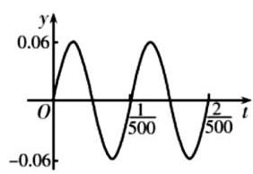
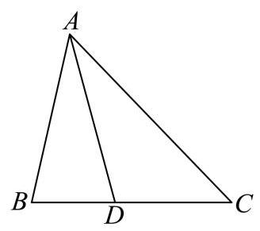
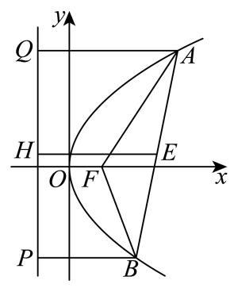
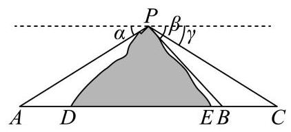
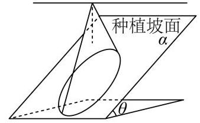
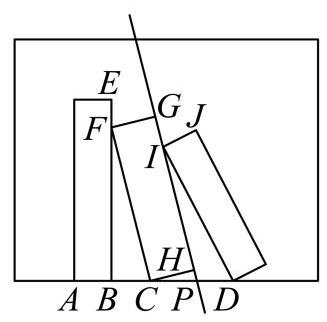
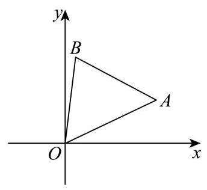

终边、同角关系与恒等变换 由象限或坐标确定符号，用诱导、倍角和和差公式化简求值。
嘉定 · 第3题 ★☆☆☆☆ · 教师预估 本题资料或解析有待核事项，预览不可作为已审定成品。
已知角 a a a P ( 1 , − 2 ) P\left( {1, - 2}\right) P ( 1 , − 2 ) sin a = \sin a = sin a =
考点： 终边点坐标求三角函数。难度依据： 终边点坐标直接求值
核查说明： 题干与答案解析尚未逐页对照原卷，数学内容未独立终审。
展开答案与解析 【答案】 − 2 5 5 - \frac{2\sqrt{5}}{5} − 5 2 5
【解析】
【分析】 利用任意角的三角函数的定义,求得 sin a \sin a sin a
【详解】 设坐标原点为 O O O
由题意可得: x = 1 , y = − 2 , ∣ O P ∣ = 1 2 + ( − 2 ) 2 = 5 x = 1, y = - 2,\left| {OP}\right| = \sqrt{{1}^{2} + {\left( -2\right) }^{2}} = \sqrt{5} x = 1 , y = − 2 , ∣ OP ∣ = 1 2 + ( − 2 ) 2 = 5
故 sin a = y ∣ O P ∣ = − 2 5 = − 2 5 5 \sin a = \frac{y}{\left| OP\right| } = \frac{-2}{\sqrt{5}} = - \frac{2\sqrt{5}}{5} sin a = ∣ OP ∣ y = 5 − 2 = − 5 2 5
故答案为: − 2 5 5 - \frac{2\sqrt{5}}{5} − 5 2 5
奉贤 · 第17题 ★★★☆☆ · 教师预估 已知函数 y = f ( x ) y = f\left( x\right) y = f ( x ) f ( x ) = sin ( π x + φ ) , ( − π 2 < φ < π 2 ) f\left( x\right) = \sin \left( {{\pi x} + \varphi }\right) ,\left( {-\frac{\pi }{2} < \varphi < \frac{\pi }{2}}\right) f ( x ) = sin ( π x + φ ) , ( − 2 π < φ < 2 π )
(1) f ( 0 ) = 3 5 f\left( 0\right) = \frac{3}{5} f ( 0 ) = 5 3 f ( 1 4 ) f\left( \frac{1}{4}\right) f ( 4 1 )
(2)若 f ( 1 2 ) , f ( 1 ) , f ( 2 ) f\left( \frac{1}{2}\right) , f\left( 1\right) , f\left( 2\right) f ( 2 1 ) , f ( 1 ) , f ( 2 ) φ \varphi φ
考点： (1) 同角关系及和角公式求值；(2) 等比中项与非零条件求参数。难度依据： 诱导公式及和角公式；等比中项与非零条件
展开答案与解析 【答案】 (1) 7 2 10 \frac{7\sqrt{2}}{10} 10 7 2
(2) π 4 \frac{\pi }{4} 4 π
【解析】
【小问 1 详解】
由 f ( 0 ) = sin φ = 3 5 , − π 2 < φ < π 2 f\left( 0\right) = \sin \varphi = \frac{3}{5}, - \frac{\pi }{2} < \varphi < \frac{\pi }{2} f ( 0 ) = sin φ = 5 3 , − 2 π < φ < 2 π cos φ = 4 5 \cos \varphi = \frac{4}{5} cos φ = 5 4
则 f ( 1 4 ) = sin ( π 4 + φ ) = sin π 4 cos φ + cos π 4 sin φ = 2 2 × 4 5 + 2 2 × 3 5 = 7 2 10 f\left( \frac{1}{4}\right) = \sin \left( {\frac{\pi }{4} + \varphi }\right) = \sin \frac{\pi }{4}\cos \varphi + \cos \frac{\pi }{4}\sin \varphi = \frac{\sqrt{2}}{2} \times \frac{4}{5} + \frac{\sqrt{2}}{2} \times \frac{3}{5} = \frac{7\sqrt{2}}{10} f ( 4 1 ) = sin ( 4 π + φ ) = sin 4 π cos φ + cos 4 π sin φ = 2 2 × 5 4 + 2 2 × 5 3 = 10 7 2
【小问 2 详解】
由 f ( 1 2 ) = sin ( π 2 + φ ) = cos φ , f ( 1 ) = sin ( π + φ ) = − sin φ f\left( \frac{1}{2}\right) = \sin \left( {\frac{\pi }{2} + \varphi }\right) = \cos \varphi ,\;f\left( 1\right) = \sin \left( {\pi + \varphi }\right) = - \sin \varphi f ( 2 1 ) = sin ( 2 π + φ ) = cos φ , f ( 1 ) = sin ( π + φ ) = − sin φ
f ( 2 ) = sin ( 2 π + φ ) = sin φ , f\left( 2\right) = \sin \left( {{2\pi } + \varphi }\right) = \sin \varphi , f ( 2 ) = sin ( 2 π + φ ) = sin φ ,
因 f ( 1 2 ) , f ( 1 ) , f ( 2 ) f\left( \frac{1}{2}\right) , f\left( 1\right) , f\left( 2\right) f ( 2 1 ) , f ( 1 ) , f ( 2 ) [ f ( 1 ) ] 2 = f ( 1 2 ) f ( 2 ) {\left\lbrack f\left( 1\right) \right\rbrack }^{2} = f\left( \frac{1}{2}\right) f\left( 2\right) [ f ( 1 ) ] 2 = f ( 2 1 ) f ( 2 )
即 sin 2 φ = cos φ ⋅ sin φ {\sin }^{2}\varphi = \cos \varphi \cdot \sin \varphi sin 2 φ = cos φ ⋅ sin φ sin φ ( sin φ − cos φ ) = 0 \sin \varphi \left( {\sin \varphi - \cos \varphi }\right) = 0 sin φ ( sin φ − cos φ ) = 0
若 f ( 1 2 ) , f ( 1 ) , f ( 2 ) f\left( \frac{1}{2}\right) , f\left( 1\right) , f\left( 2\right) f ( 2 1 ) , f ( 1 ) , f ( 2 ) sin φ ≠ 0 \sin \varphi \neq 0 sin φ = 0
所以 sin φ = cos φ , tan φ = 1 \sin \varphi = \cos \varphi ,\tan \varphi = 1 sin φ = cos φ , tan φ = 1 − π 2 < φ < π 2 - \frac{\pi }{2} < \varphi < \frac{\pi }{2} − 2 π < φ < 2 π φ = π 4 \varphi = \frac{\pi }{4} φ = 4 π f ( 1 2 ) , f ( 1 ) , f ( 2 ) f\left( \frac{1}{2}\right) , f\left( 1\right) , f\left( 2\right) f ( 2 1 ) , f ( 1 ) , f ( 2 )
为 2 2 , − 2 2 , 2 2 \frac{\sqrt{2}}{2}, - \frac{\sqrt{2}}{2},\frac{\sqrt{2}}{2} 2 2 , − 2 2 , 2 2
综上， φ = π 4 \varphi = \frac{\pi }{4} φ = 4 π
宝山 · 第2题 ★☆☆☆☆ · 教师预估 已知 cos a = 1 3 \cos a = \frac{1}{3} cos a = 3 1 cos 2 a = \cos {2a} = cos 2 a =
考点： 二倍角余弦直接求值。难度依据： 二倍角余弦直接求值
展开答案与解析 【答案】 − 7 9 - \frac{7}{9} − 9 7
【解析】
【详解】 ∵ cos a = 1 3 \because \cos a = \frac{1}{3} ∵ cos a = 3 1
∴ cos 2 a = 2 ( cos a ) 2 − 1 = 2 × 1 9 − 1 = − 7 9 \therefore \cos {2a} = 2{\left( \cos a\right) }^{2} - 1 = 2 \times \frac{1}{9} - 1 = - \frac{7}{9} ∴ cos 2 a = 2 ( cos a ) 2 − 1 = 2 × 9 1 − 1 = − 9 7
崇明 · 第6题 ★☆☆☆☆ · 教师预估 已知 cos θ = − 3 5 \cos \theta = - \frac{3}{5} cos θ = − 5 3 cos 2 θ \cos {2\theta } cos 2 θ
考点： 二倍角余弦公式。难度依据： 二倍角余弦公式
展开答案与解析 【答案】 − 7 25 - \frac{7}{25} − 25 7
【解析】
【分析】 利用二倍角的余弦公式, 即可求得结果.
【详解】 由 cos θ = − 3 5 \cos \theta = - \frac{3}{5} cos θ = − 5 3 cos 2 θ = 2 cos 2 θ − 1 = 2 × 9 25 − 1 = − 7 25 \cos {2\theta } = 2{\cos }^{2}\theta - 1 = 2 \times \frac{9}{25} - 1 = - \frac{7}{25} cos 2 θ = 2 cos 2 θ − 1 = 2 × 25 9 − 1 = − 25 7
故答案为: − 7 25 - \frac{7}{25} − 25 7
徐汇 · 第6题 ★☆☆☆☆ · 教师预估 若 tan ( a − β ) = 2 3 , tan β = 1 \tan \left( {a - \beta }\right) = \frac{2}{3},\tan \beta = 1 tan ( a − β ) = 3 2 , tan β = 1 tan a = \tan a = tan a =
考点： 由已知正切求和角正切。难度依据： 直接代公式
展开答案与解析 【答案】 5
【解析】
【详解】 由 tan ( a − β ) = 2 3 , tan β = 1 \tan \left( {a - \beta }\right) = \frac{2}{3},\tan \beta = 1 tan ( a − β ) = 3 2 , tan β = 1
则 tan a = tan [ ( a − β ) + β ] = tan ( a − β ) + tan β 1 − tan ( a − β ) tan β = 2 3 + 1 1 − 2 3 × 1 = 5 \tan a = \tan \left\lbrack {\left( {a - \beta }\right) + \beta }\right\rbrack = \frac{\tan \left( {a - \beta }\right) + \tan \beta }{1 - \tan \left( {a - \beta }\right) \tan \beta } = \frac{\frac{2}{3} + 1}{1 - \frac{2}{3} \times 1} = 5 tan a = tan [ ( a − β ) + β ] = 1 − t a n ( a − β ) t a n β t a n ( a − β ) + t a n β = 1 − 3 2 × 1 3 2 + 1 = 5
浦东 · 第18题 ★★★★☆ · 教师预估 已知 f ( x ) = 3 sin x + 2 cos ( x + φ ) f\left( x\right) = \sqrt{3}\sin x + 2\cos \left( {x + \varphi }\right) f ( x ) = 3 sin x + 2 cos ( x + φ ) φ ∈ [ 0 , π ] \varphi \in \left\lbrack {0,\pi }\right\rbrack φ ∈ [ 0 , π ]
(1)若函数 y = f ( x ) y = f\left( x\right) y = f ( x ) R \mathrm{R} R φ \varphi φ
(2)若 φ = π 3 \varphi = \frac{\pi }{3} φ = 3 π x x x f ( x ) + x 2 − a > 0 f\left( x\right) + \frac{x}{2} - a > 0 f ( x ) + 2 x − a > 0 x ∈ [ 0 , π ] x \in \left\lbrack {0,\pi }\right\rbrack x ∈ [ 0 , π ] a a a
考点： (1)展开角和判断奇偶性；(2)分离参数，对闭区间函数求导并比较最值。难度依据： 三角化简后驻点与端点比较
展开答案与解析 【答案】 (1) π 2 \frac{\pi }{2} 2 π
(2) ( − ∞ , 5 π 12 − 3 2 ) \left( {-\infty ,\frac{5\pi }{12} - \frac{\sqrt{3}}{2}}\right) ( − ∞ , 12 5 π − 2 3 )
【解析】
【分析】 (1) 根据奇函数定义进行求解即可;
(2)化简 f ( x ) f\left( x\right) f ( x ) a a a g ( x ) = cos x + 1 2 x g\left( x\right) = \cos x + \frac{1}{2}x g ( x ) = cos x + 2 1 x y = g ( x ) y = g\left( x\right) y = g ( x ) x ∈ [ 0 , π ] x \in \left\lbrack {0,\pi }\right\rbrack x ∈ [ 0 , π ] a a a
【小问 1 详解】
若函数 y = f ( x ) y = f\left( x\right) y = f ( x ) R \mathbf{R} R
则 f ( − x ) = − f ( x ) f\left( {-x}\right) = - f\left( x\right) f ( − x ) = − f ( x ) x ∈ R x \in \mathbf{R} x ∈ R
即 3 sin x + 2 cos ( x + φ ) = − 3 sin ( − x ) − 2 cos ( − x + φ ) \sqrt{3}\sin x + 2\cos \left( {x + \varphi }\right) = - \sqrt{3}\sin \left( {-x}\right) - 2\cos \left( {-x + \varphi }\right) 3 sin x + 2 cos ( x + φ ) = − 3 sin ( − x ) − 2 cos ( − x + φ )
即 cos ( x + φ ) + cos ( − x + φ ) = 0 \cos \left( {x + \varphi }\right) + \cos \left( {-x + \varphi }\right) = 0 cos ( x + φ ) + cos ( − x + φ ) = 0 x ∈ R x \in \mathbf{R} x ∈ R
即 2 cos x ⋅ cos φ = 0 2\cos x \cdot \cos \varphi = 0 2 cos x ⋅ cos φ = 0 x ∈ R x \in \mathbf{R} x ∈ R
因此 φ = k π + π 2 ( k ∈ Z ) \varphi = {k\pi } + \frac{\pi }{2}\left( {k \in \mathbf{Z}}\right) φ = kπ + 2 π ( k ∈ Z ) φ ∈ [ 0 , π ] \varphi \in \left\lbrack {0,\pi }\right\rbrack φ ∈ [ 0 , π ] φ = π 2 \varphi = \frac{\pi }{2} φ = 2 π
因此,若函数 y = f ( x ) y = f\left( x\right) y = f ( x ) R \mathbf{R} R φ \varphi φ π 2 \frac{\pi }{2} 2 π
【小问 2 详解】
若 φ = π 3 \varphi = \frac{\pi }{3} φ = 3 π f ( x ) = cos x f\left( x\right) = \cos x f ( x ) = cos x
由题意,即 a < cos x + 1 2 x a < \cos x + \frac{1}{2}x a < cos x + 2 1 x x ∈ [ 0 , π ] x \in \left\lbrack {0,\pi }\right\rbrack x ∈ [ 0 , π ]
令 g ( x ) = cos x + 1 2 x g\left( x\right) = \cos x + \frac{1}{2}x g ( x ) = cos x + 2 1 x a < g ( x ) min a < g{\left( x\right) }_{\min } a < g ( x ) m i n
由 g ′ ( x ) = 1 2 − sin x {g}^{\prime }\left( x\right) = \frac{1}{2} - \sin x g ′ ( x ) = 2 1 − sin x
可知函数 y = g ( x ) y = g\left( x\right) y = g ( x ) x ∈ [ 0 , π ] x \in \left\lbrack {0,\pi }\right\rbrack x ∈ [ 0 , π ] x 1 = π 6 , x 2 = 5 π 6 {x}_{1} = \frac{\pi }{6},{x}_{2} = \frac{5\pi }{6} x 1 = 6 π , x 2 = 6 5 π
比较 g ( 0 ) = 1 , g ( π 6 ) = π 12 + 3 2 , g ( 5 π 6 ) = 5 π 12 − 3 2 , g ( π ) = π 2 − 1 g\left( 0\right) = 1, g\left( \frac{\pi }{6}\right) = \frac{\pi }{12} + \frac{\sqrt{3}}{2}, g\left( \frac{5\pi }{6}\right) = \frac{5\pi }{12} - \frac{\sqrt{3}}{2}, g\left( \pi \right) = \frac{\pi }{2} - 1 g ( 0 ) = 1 , g ( 6 π ) = 12 π + 2 3 , g ( 6 5 π ) = 12 5 π − 2 3 , g ( π ) = 2 π − 1
可知函数 y = g ( x ) y = g\left( x\right) y = g ( x ) x ∈ [ 0 , π ] x \in \left\lbrack {0,\pi }\right\rbrack x ∈ [ 0 , π ] g ( 5 π 6 ) = 5 π 12 − 3 2 g\left( \frac{5\pi }{6}\right) = \frac{5\pi }{12} - \frac{\sqrt{3}}{2} g ( 6 5 π ) = 12 5 π − 2 3
因此，实数 a a a ( − ∞ , 5 π 12 − 3 2 ) \left( {-\infty ,\frac{5\pi }{12} - \frac{\sqrt{3}}{2}}\right) ( − ∞ , 12 5 π − 2 3 )
金山 · 第5题 ★☆☆☆☆ · 教师预估 已知角 a a a sin a = − 4 5 \sin a = - \frac{4}{5} sin a = − 5 4 cos α = \cos \alpha = cos α =
考点： 象限与同角关系。难度依据： 象限与同角关系
展开答案与解析 【答案】 3 5 \frac{3}{5} 5 3
【解析】
【详解】 ∴ sin a = − 4 5 , sin 2 a + cos 2 a = 1 , ∴ ( − 4 5 ) 2 + cos 2 a = 1 , ∴ cos a = ± 3 5 \therefore \sin a = - \frac{4}{5},{\sin }^{2}a + {\cos }^{2}a = 1,\therefore {\left( -\frac{4}{5}\right) }^{2} + {\cos }^{2}a = 1,\therefore \cos a = \pm \frac{3}{5} ∴ sin a = − 5 4 , sin 2 a + cos 2 a = 1 , ∴ ( − 5 4 ) 2 + cos 2 a = 1 , ∴ cos a = ± 5 3
∵ a \because a ∵ a ∴ cos a > 0 , ∴ cos a = 3 5 \therefore \cos a > 0,\therefore \cos a = \frac{3}{5} ∴ cos a > 0 , ∴ cos a = 5 3
金山 · 第14题 ★★☆☆☆ · 教师预估 函数 y = cos ( π 2 − 2 x ) y = \cos \left( {\frac{\pi }{2} - {2x}}\right) y = cos ( 2 π − 2 x )
A. 最小正周期为 π \pi π
B. 最小正周期为 π \pi π
C. 最小正周期为 π 2 \frac{\pi }{2} 2 π
D. 最小正周期为 π 2 \frac{\pi }{2} 2 π
考点： 诱导公式周期和奇偶性。难度依据： 诱导公式周期和奇偶性
展开答案与解析 【答案】 A
【解析】
【详解】 y = cos ( π 2 − 2 x ) = sin 2 x y = \cos \left( {\frac{\pi }{2} - {2x}}\right) = \sin {2x} y = cos ( 2 π − 2 x ) = sin 2 x
T = 2 π 2 = π T = \frac{2\pi }{2} = \pi T = 2 2 π = π π \pi π
设 y = f ( x ) = sin 2 x , f ( − x ) = sin ( − 2 x ) = − sin 2 x = − f ( x ) y = f\left( x\right) = \sin {2x}, f\left( {-x}\right) = \sin \left( {-{2x}}\right) = - \sin {2x} = - f\left( x\right) y = f ( x ) = sin 2 x , f ( − x ) = sin ( − 2 x ) = − sin 2 x = − f ( x )
故 y = f ( x ) = sin 2 x y = f\left( x\right) = \sin {2x} y = f ( x ) = sin 2 x A \mathrm{A} A
青浦 · 第3题 ★☆☆☆☆ · 教师预估 在平面直角坐标系 x O y {xOy} x O y a a a O O O x x x P ( 1 , − 3 ) P\left( {1, - 3}\right) P ( 1 , − 3 ) tan a = \tan a = tan a =
考点： 终边点坐标求正切。难度依据： 终边点坐标求正切
展开答案与解析 【答案】 -3
【解析】
【详解】 因为角 a a a O O O x x x P ( 1 , − 3 ) P\left( {1, - 3}\right) P ( 1 , − 3 ) tan a = − 3 1 = − 3 \tan a = \frac{-3}{1} = - 3 tan a = 1 − 3 = − 3
静安 · 第5题 ★★☆☆☆ · 教师预估 若 sin ( 2 π − a ) tan ( π − a ) ⋅ cot ( π 2 + a ) = 1 3 \frac{\sin \left( {{2\pi } - a}\right) }{\tan \left( {\pi - a}\right) } \cdot \cot \left( {\frac{\pi }{2} + a}\right) = \frac{1}{3} t a n ( π − a ) s i n ( 2 π − a ) ⋅ cot ( 2 π + a ) = 3 1 cos 2 a = \cos {2a} = cos 2 a =
考点： 诱导公式与二倍角。难度依据： 诱导公式与二倍角
展开答案与解析 【答案】 7 9 \frac{7}{9} 9 7
【解析】
【分析】 根据诱导公式以及二倍角公式即可求解.
【详解】 sin ( 2 π − a ) tan ( π − a ) ⋅ cot ( π 2 + a ) = − sin a − tan a ⋅ ( − tan a ) = − sin a = 1 3 ⇒ sin a = − 1 3 \frac{\sin \left( {{2\pi } - a}\right) }{\tan \left( {\pi - a}\right) } \cdot \cot \left( {\frac{\pi }{2} + a}\right) = \frac{-\sin a}{-\tan a} \cdot \left( {-\tan a}\right) = - \sin a = \frac{1}{3} \Rightarrow \sin a = - \frac{1}{3} t a n ( π − a ) s i n ( 2 π − a ) ⋅ cot ( 2 π + a ) = − t a n a − s i n a ⋅ ( − tan a ) = − sin a = 3 1 ⇒ sin a = − 3 1 cos 2 a = 1 − 2 sin 2 a = 1 − 2 × ( − 1 3 ) 2 = 7 9 \cos {2a} = 1 - 2{\sin }^{2}a = 1 - 2 \times {\left( -\frac{1}{3}\right) }^{2} = \frac{7}{9} cos 2 a = 1 − 2 sin 2 a = 1 − 2 × ( − 3 1 ) 2 = 9 7
黄浦 · 第7题 ★★☆☆☆ · 教师预估 已知 tan a < 0 \tan a < 0 tan a < 0 cos ( π 2 + a ) = 2 2 3 \cos \left( {\frac{\pi }{2} + a}\right) = \frac{2\sqrt{2}}{3} cos ( 2 π + a ) = 3 2 2 cos a \cos a cos a
考点： 诱导公式与同角关系。难度依据： 诱导公式与同角关系
展开答案与解析 【答案】 1 3 \frac{1}{3} 3 1
【解析】
【分析】 利用诱导公式可得 sin a = − 2 2 3 \sin a = - \frac{2\sqrt{2}}{3} sin a = − 3 2 2 a a a
【详解】 因为 cos ( π 2 + a ) = − sin a = 2 2 3 \cos \left( {\frac{\pi }{2} + a}\right) = - \sin a = \frac{2\sqrt{2}}{3} cos ( 2 π + a ) = − sin a = 3 2 2 sin a = − 2 2 3 < 0 \sin a = - \frac{2\sqrt{2}}{3} < 0 sin a = − 3 2 2 < 0
且 tan a < 0 \tan a < 0 tan a < 0 a a a
所以 cos a = 1 − sin 2 a = 1 − ( − 2 2 3 ) 2 = 1 3 \cos a = \sqrt{1 - {\sin }^{2}a} = \sqrt{1 - {\left( -\frac{2\sqrt{2}}{3}\right) }^{2}} = \frac{1}{3} cos a = 1 − sin 2 a = 1 − ( − 3 2 2 ) 2 = 3 1
图像、周期、值域与参数 结合区间端点和最值点位置研究周期、平移、零点及频率参数。
嘉定 · 第7题 ★★☆☆☆ · 教师预估 本题资料或解析有待核事项，预览不可作为已审定成品。
函数 y = sin 4 x + cos 4 x y = {\sin }^{4}x + {\cos }^{4}x y = sin 4 x + cos 4 x
考点： 倍角化简与最小正周期。难度依据： 倍角化简后判周期
核查说明： 题干与答案解析尚未逐页对照原卷，数学内容未独立终审。
展开答案与解析 【答案】 π 2 \frac{\pi }{2} 2 π
【解析】
【分析】 根据 sin 2 x + cos 2 x = 1 {\sin }^{2}x + {\cos }^{2}x = 1 sin 2 x + cos 2 x = 1
【详解】 ∵ y = sin 4 x + cos 4 x = ( sin 2 x + cos 2 x ) 2 − 2 sin 2 x ⋅ cos 2 x = − 1 2 sin 2 2 x + 1 = − 1 − cos 4 x 4 + 1 = 1 4 cos 4 x + 3 4 \because y = {\sin }^{4}x + {\cos }^{4}x = {\left( {\sin }^{2}x + {\cos }^{2}x\right) }^{2} - 2{\sin }^{2}x \cdot {\cos }^{2}x \; = - \frac{1}{2}{\sin }^{2}{2x} + 1 = - \frac{1 - \cos {4x}}{4} + 1 = \frac{1}{4}\cos {4x} + \frac{3}{4} ∵ y = sin 4 x + cos 4 x = ( sin 2 x + cos 2 x ) 2 − 2 sin 2 x ⋅ cos 2 x = − 2 1 sin 2 2 x + 1 = − 4 1 − c o s 4 x + 1 = 4 1 cos 4 x + 4 3
∴ y = sin 4 x + cos 4 x \therefore y = {\sin }^{4}x + {\cos }^{4}x ∴ y = sin 4 x + cos 4 x T = 2 π 4 = π 2 T = \frac{2\pi }{4} = \frac{\pi }{2} T = 4 2 π = 2 π
【点睛】 本题考查三角函数的性质. 三角函数的性质问题,先化简为 A sin ( ω x + φ ) + B A\sin \left( {{\omega x} + \varphi }\right) + B A sin ( ω x + φ ) + B
嘉定 · 第9题 ★★★☆☆ · 教师预估 本题资料或解析有待核事项，预览不可作为已审定成品。
已知向量 a → = ( cos x , sin x ) , b → = ( 3 , 3 ) \overrightarrow{a} = \left( {\cos x,\sin x}\right) ,\overrightarrow{b} = \left( {3,\sqrt{3}}\right) a = ( cos x , sin x ) , b = ( 3 , 3 ) x ∈ [ 0 , π 2 ] x \in \left\lbrack {0,\frac{\pi }{2}}\right\rbrack x ∈ [ 0 , 2 π ] a → \overrightarrow{a} a b → \overrightarrow{b} b
考点： 数量投影与三角函数值域；有限区间三角函数值域。难度依据： 向量投影转三角函数区间值域
核查说明： 题干与答案解析尚未逐页对照原卷，数学内容未独立终审。
展开答案与解析 【答案】 [ 1 2 , 1 ] \left\lbrack {\frac{1}{2},1}\right\rbrack [ 2 1 , 1 ]
【解析】
【分析】 代入数量投影公式,转化为三角函数值域问题求解.
【详解】 a → \overrightarrow{a} a b → \overrightarrow{b} b
a → ⋅ b → ∣ b → ∣ = 3 cos x + 3 sin x 2 3 = 2 3 cos ( x − π 6 ) 2 3 = cos ( x − π 6 ) , \frac{\overrightarrow{a} \cdot \overrightarrow{b}}{\left| \overrightarrow{b}\right| } = \frac{3\cos x + \sqrt{3}\sin x}{2\sqrt{3}} = \frac{2\sqrt{3}\cos \left( {x - \frac{\pi }{6}}\right) }{2\sqrt{3}} = \cos \left( {x - \frac{\pi }{6}}\right) , b a ⋅ b = 2 3 3 c o s x + 3 s i n x = 2 3 2 3 c o s ( x − 6 π ) = cos ( x − 6 π ) ,
x ∈ [ 0 , π 2 ] , x − π 6 ∈ [ − π 6 , π 3 ] , cos ( x − π 6 ) ∈ [ 1 2 , 1 ] . x \in \left\lbrack {0,\frac{\pi }{2}}\right\rbrack ,\;x - \frac{\pi }{6} \in \left\lbrack {-\frac{\pi }{6},\frac{\pi }{3}}\right\rbrack ,\;\cos \left( {x - \frac{\pi }{6}}\right) \in \left\lbrack {\frac{1}{2},1}\right\rbrack . x ∈ [ 0 , 2 π ] , x − 6 π ∈ [ − 6 π , 3 π ] , cos ( x − 6 π ) ∈ [ 2 1 , 1 ] .
奉贤 · 第10题 ★★★☆☆ · 教师预估 已知复数 z = cos θ + i sin θ , θ ∈ [ 0 , 2 π ) , i z = \cos \theta + \mathrm{i}\sin \theta ,\theta \in \lbrack 0,{2\pi }),\mathrm{i} z = cos θ + i sin θ , θ ∈ [ 0 , 2 π ) , i ∣ z + 6 ∣ 2 + ∣ z − 8 i ∣ 2 {\left| z + 6\right| }^{2} + {\left| z - 8\mathrm{i}\right| }^{2} ∣ z + 6 ∣ 2 + ∣ z − 8 i ∣ 2
考点： 复数模的坐标展开；辅助角公式求范围。难度依据： 复数模的坐标展开；辅助角公式求范围
展开答案与解析 【答案】 [82,122]
【解析】
【详解】 ∵ i 2 = − 1 \because {\mathrm{i}}^{2} = - 1 ∵ i 2 = − 1
∴ ∣ z + 6 ∣ 2 + ∣ z − 8 i ∣ 2 = ∣ ( cos θ + 6 ) + i sin θ ∣ 2 + ∣ cos θ + i ( sin θ − 8 ) ∣ 2 \therefore {\left| z + 6\right| }^{2} + {\left| z - 8\mathrm{i}\right| }^{2} = {\left| \left( \cos \theta + 6\right) + \mathrm{i}\sin \theta \right| }^{2} + {\left| \cos \theta + \mathrm{i}\left( \sin \theta - 8\right) \right| }^{2} ∴ ∣ z + 6 ∣ 2 + ∣ z − 8 i ∣ 2 = ∣ ( cos θ + 6 ) + i sin θ ∣ 2 + ∣ cos θ + i ( sin θ − 8 ) ∣ 2
= ( cos 2 θ + 12 cos θ + 36 + sin 2 θ ) + ( cos 2 θ + sin 2 θ − 16 sin θ + 64 ) = \left( {{\cos }^{2}\theta + {12}\cos \theta + {36} + {\sin }^{2}\theta }\right) + \left( {{\cos }^{2}\theta + {\sin }^{2}\theta - {16}\sin \theta + {64}}\right) = ( cos 2 θ + 12 cos θ + 36 + sin 2 θ ) + ( cos 2 θ + sin 2 θ − 16 sin θ + 64 )
= 37 + 12 cos θ + 65 − 16 sin θ = 102 + 12 cos θ − 16 sin θ = {37} + {12}\cos \theta + {65} - {16}\sin \theta = {102} + {12}\cos \theta - {16}\sin \theta = 37 + 12 cos θ + 65 − 16 sin θ = 102 + 12 cos θ − 16 sin θ
= 102 + 20 ( 3 5 cos θ − 4 5 sin θ ) = {102} + {20}\left( {\frac{3}{5}\cos \theta - \frac{4}{5}\sin \theta }\right) = 102 + 20 ( 5 3 cos θ − 5 4 sin θ ) cos φ = 3 5 , sin φ = 4 5 \cos \varphi = \frac{3}{5},\sin \varphi = \frac{4}{5} cos φ = 5 3 , sin φ = 5 4
则 ∣ z + 6 ∣ 2 + ∣ z − 8 i ∣ 2 = 102 + 20 cos ( θ + φ ) {\left| z + 6\right| }^{2} + {\left| z - 8\mathrm{i}\right| }^{2} = {102} + {20}\cos \left( {\theta + \varphi }\right) ∣ z + 6 ∣ 2 + ∣ z − 8 i ∣ 2 = 102 + 20 cos ( θ + φ )
当 θ + φ = 2 k π , k ∈ Z \theta + \varphi = {2k\pi }, k \in \mathbf{Z} θ + φ = 2 kπ , k ∈ Z cos θ = 3 5 , sin θ = − 4 5 \cos \theta = \frac{3}{5},\sin \theta = - \frac{4}{5} cos θ = 5 3 , sin θ = − 5 4 cos ( θ + φ ) = 1 \cos \left( {\theta + \varphi }\right) = 1 cos ( θ + φ ) = 1
此时 ∣ z + 6 ∣ 2 + ∣ z − 8 i ∣ 2 {\left| z + 6\right| }^{2} + {\left| z - 8\mathrm{i}\right| }^{2} ∣ z + 6 ∣ 2 + ∣ z − 8 i ∣ 2
当 θ + φ = 2 k π + π , k ∈ Z \theta + \varphi = {2k\pi } + \pi , k \in \mathbf{Z} θ + φ = 2 kπ + π , k ∈ Z cos θ = − 3 5 , sin θ = 4 5 \cos \theta = - \frac{3}{5},\sin \theta = \frac{4}{5} cos θ = − 5 3 , sin θ = 5 4 cos ( θ + φ ) = − 1 \cos \left( {\theta + \varphi }\right) = - 1 cos ( θ + φ ) = − 1
此时 ∣ z + 6 ∣ 2 + ∣ z − 8 i ∣ 2 {\left| z + 6\right| }^{2} + {\left| z - 8\mathrm{i}\right| }^{2} ∣ z + 6 ∣ 2 + ∣ z − 8 i ∣ 2
∴ ∣ z + 6 ∣ 2 + ∣ z − 8 i ∣ 2 = 102 + 12 cos θ − 16 sin θ ∈ [ 82 , 122 ] \therefore {\left| z + 6\right| }^{2} + {\left| z - 8\mathrm{i}\right| }^{2} = {102} + {12}\cos \theta - {16}\sin \theta \in \left\lbrack {{82},{122}}\right\rbrack ∴ ∣ z + 6 ∣ 2 + ∣ z − 8 i ∣ 2 = 102 + 12 cos θ − 16 sin θ ∈ [ 82 , 122 ]
奉贤 · 第12题 ★★★☆☆ · 教师预估 在平面直角坐标系 x O y {xOy} x O y A ( cos θ , sin θ ) , B ( − sin θ , cos θ ) , θ ∈ [ 0 , 2 π ) A\left( {\cos \theta ,\sin \theta }\right) , B\left( {-\sin \theta ,\cos \theta }\right) ,\theta \in \lbrack 0,{2\pi }) A ( cos θ , sin θ ) , B ( − sin θ , cos θ ) , θ ∈ [ 0 , 2 π ) P ( x , y ) P\left( {x, y}\right) P ( x , y ) O P → ⋅ O A → = 1 , O P → ⋅ O B → = 2 \overrightarrow{OP} \cdot \overrightarrow{OA} = 1,\overrightarrow{OP} \cdot \overrightarrow{OB} = 2 OP ⋅ O A = 1 , OP ⋅ OB = 2 x y {xy} x y
考点： 坐标数量积确定旋转坐标；倍角与辅助角求积的最大值。难度依据： 坐标数量积确定旋转坐标；倍角与辅助角求积的最大值
展开答案与解析 【答案】 5 2 \frac{5}{2} 2 5
【解析】
【分析】 通过条件建立关于 x x x y y y x , y x, y x , y
【详解】 O P → = ( x , y ) , O A → = ( cos θ , sin θ ) , O B → = ( − sin θ , cos θ ) \overrightarrow{OP} = \left( {x, y}\right) ,\overrightarrow{OA} = \left( {\cos \theta ,\sin \theta }\right) ,\overrightarrow{OB} = \left( {-\sin \theta ,\cos \theta }\right) OP = ( x , y ) , O A = ( cos θ , sin θ ) , OB = ( − sin θ , cos θ )
由题意得 { O P → ⋅ O A → = x cos θ + y sin θ = 1 O P → ⋅ O B → = − x sin θ + y cos θ = 2 \left\{ \begin{array}{l} \overrightarrow{OP} \cdot \overrightarrow{OA} = x\cos \theta + y\sin \theta = 1 \\ \overrightarrow{OP} \cdot \overrightarrow{OB} = - x\sin \theta + y\cos \theta = 2 \end{array}\right. { OP ⋅ O A = x cos θ + y sin θ = 1 OP ⋅ OB = − x sin θ + y cos θ = 2 { x = cos θ − 2 sin θ y = sin θ + 2 cos θ \left\{ \begin{array}{l} x = \cos \theta - 2\sin \theta \\ y = \sin \theta + 2\cos \theta \end{array}\right. { x = cos θ − 2 sin θ y = sin θ + 2 cos θ
x y = 2 cos 2 θ − 2 sin 2 θ − 3 sin θ cos θ = 2 cos 2 θ − 3 2 sin 2 θ = 5 2 sin ( 2 θ + φ ) , θ ∈ [ 0 , 2 π ) {xy} = 2{\cos }^{2}\theta - 2{\sin }^{2}\theta - 3\sin \theta \cos \theta = 2\cos {2\theta } - \frac{3}{2}\sin {2\theta } = \frac{5}{2}\sin \left( {{2\theta } + \varphi }\right) ,\theta \in \lbrack 0,{2\pi }) x y = 2 cos 2 θ − 2 sin 2 θ − 3 sin θ cos θ = 2 cos 2 θ − 2 3 sin 2 θ = 2 5 sin ( 2 θ + φ ) , θ ∈ [ 0 , 2 π ) sin ( 2 θ + φ ) = 1 \sin \left( {{2\theta } + \varphi }\right) = 1 sin ( 2 θ + φ ) = 1 y y y 5 2 \frac{5}{2} 2 5
所以 y y y 5 2 \frac{5}{2} 2 5
奉贤 · 第15题 ★★☆☆☆ · 教师预估 音乐，是人类精神通过无意识计算而获得的愉悦享受，1807 年法国数学家傅里叶发现代表任何周期性声音的公式是形如 y = A sin w x y = A\sin {wx} y = A sin w x
音叉

图1
图2
图3
A. f ( t ) = 0.06 sin 1000 π t + 0.02 sin 1500 π t + 0.01 sin 3000 π t f\left( t\right) = {0.06}\sin {1000\pi t} + {0.02}\sin {1500\pi t} + {0.01}\sin {3000\pi t} f ( t ) = 0.06 sin 1000 π t + 0.02 sin 1500 π t + 0.01 sin 3000 π t
B. f ( t ) = 0.06 sin 500 π t + 0.02 sin 2000 π t + 0.01 sin 3000 π t f\left( t\right) = {0.06}\sin {500\pi t} + {0.02}\sin {2000\pi t} + {0.01}\sin {3000\pi t} f ( t ) = 0.06 sin 500 π t + 0.02 sin 2000 π t + 0.01 sin 3000 π t
C. f ( t ) = 0.06 sin 1000 π t + 0.02 sin 2000 π t + 0.01 sin 3000 π t f\left( t\right) = {0.06}\sin {1000\pi t} + {0.02}\sin {2000\pi t} + {0.01}\sin {3000\pi t} f ( t ) = 0.06 sin 1000 π t + 0.02 sin 2000 π t + 0.01 sin 3000 π t
D. f ( t ) = 0.06 sin 1000 π t + 0.02 sin 2500 π t + 0.01 sin 3000 π t f\left( t\right) = {0.06}\sin {1000\pi t} + {0.02}\sin {2500\pi t} + {0.01}\sin {3000\pi t} f ( t ) = 0.06 sin 1000 π t + 0.02 sin 2500 π t + 0.01 sin 3000 π t
考点： 由图像振幅周期确定正弦表达式。难度依据： 由图像振幅周期确定正弦表达式
展开答案与解析 【答案】 C
【解析】
【分析】 由图 1 求出 A 、 T 、 ω A\text{ 、 }T\text{ 、 }\omega A 、 T 、 ω f ( t ) f\left( t\right) f ( t )
【详解】 解: 由图 1 知, A = 0.06 , T = 2 500 − 1 500 = 1 500 A = {0.06}, T = \frac{2}{500} - \frac{1}{500} = \frac{1}{500} A = 0.06 , T = 500 2 − 500 1 = 500 1
所以 ω = 2 π T = 1000 π \omega = \frac{2\pi }{T} = {1000\pi } ω = T 2 π = 1000 π y = 0.06 sin 1000 π t y = {0.06}\sin {1000\pi t} y = 0.06 sin 1000 π t
结合题意知,函数 f ( t ) = 0.06 sin 1000 π t + 0.02 sin 2000 π t + 0.01 sin 3000 π t f\left( t\right) = {0.06}\sin {1000\pi t} + {0.02}\sin {2000\pi t} + {0.01}\sin {3000\pi t} f ( t ) = 0.06 sin 1000 π t + 0.02 sin 2000 π t + 0.01 sin 3000 π t
故选: C C C
崇明 · 第11题 ★★★★☆ · 教师预估 设 f 1 ( x ) = sin x , f 2 ( x ) = cos ( x + π 6 ) {f}_{1}\left( x\right) = \sin x,{f}_{2}\left( x\right) = \cos \left( {x + \frac{\pi }{6}}\right) f 1 ( x ) = sin x , f 2 ( x ) = cos ( x + 6 π ) t ∈ R t \in \mathbf{R} t ∈ R i ∈ { 1 , 2 } i \in \{ 1,2\} i ∈ { 1 , 2 } y = f i ( x ) y = {f}_{i}\left( x\right) y = f i ( x ) [ t , t + a ] ( a > 0 ) \left\lbrack {t, t + a}\right\rbrack \left( {a > 0}\right) [ t , t + a ] ( a > 0 ) a a a
考点： 两个三角函数单调区间端点及量词。难度依据： 两个三角函数单调区间端点及量词
展开答案与解析 【答案】 ( 0 , π 3 ] \left( {0,\frac{\pi }{3}}\right\rbrack ( 0 , 3 π ]
【解析】
【分析】 先找出两个函数的单调区间的分界点, 再进行排序, 找到相邻两分界点的最小间距即可
【详解】 f 1 ( x ) = sin x {f}_{1}\left( x\right) = \sin x f 1 ( x ) = sin x x = π 2 + k π , k ∈ Z x = \frac{\pi }{2} + {k\pi }, k \in \mathrm{Z} x = 2 π + kπ , k ∈ Z
相邻分界点间隔为 π \pi π π \pi π
f 2 ( x ) = cos ( x + π 6 ) {f}_{2}\left( x\right) = \cos \left( {x + \frac{\pi }{6}}\right) f 2 ( x ) = cos ( x + 6 π ) x + π 6 = l π , l ∈ Z x + \frac{\pi }{6} = {l\pi }, l \in \mathrm{Z} x + 6 π = l π , l ∈ Z x = l π − π 6 , l ∈ Z x = {l\pi } - \frac{\pi }{6}, l \in \mathrm{Z} x = l π − 6 π , l ∈ Z
故单调区间的分界点 x = k π − π 6 , k ∈ Z x = {k\pi } - \frac{\pi }{6},\;k \in \mathrm{Z} x = kπ − 6 π , k ∈ Z
相邻分界点间隔为 π \pi π π \pi π
两类分界点合并排序,可发现它们交替排列,相邻两个不同类型的分界点的间隔交替为 π 3 \frac{\pi }{3} 3 π 2 π 3 \frac{2\pi }{3} 3 2 π
所以两类分界点之间的最小距离为 π 3 \frac{\pi }{3} 3 π a ≤ π 3 a \leq \frac{\pi }{3} a ≤ 3 π a > 0 a > 0 a > 0 a a a ( 0 , π 3 ] \left( {0,\frac{\pi }{3}}\right\rbrack ( 0 , 3 π ]
徐汇 · 第15题 ★★★★☆ · 教师预估 设 ω > 0 \omega > 0 ω > 0 y = 3 2 cos ω x + 1 2 sin ω x y = \frac{\sqrt{3}}{2}\cos {\omega x} + \frac{1}{2}\sin {\omega x} y = 2 3 cos ω x + 2 1 sin ω x ( π 2 , π ) \left( {\frac{\pi }{2},\pi }\right) ( 2 π , π ) ω \omega ω
A. ( 0 , 1 2 ] \left( {0,\frac{1}{2}}\right\rbrack ( 0 , 2 1 ]
B. [ 1 3 , 1 2 ] \left\lbrack {\frac{1}{3},\frac{1}{2}}\right\rbrack [ 3 1 , 2 1 ]
C. ( 0 , 1 6 ] ∪ [ 1 3 , 7 6 ] \left( {0,\frac{1}{6}}\right\rbrack \cup \left\lbrack {\frac{1}{3},\frac{7}{6}}\right\rbrack \; ( 0 , 6 1 ] ∪ [ 3 1 , 6 7 ]
D. ( 0 , 1 6 ] ∪ [ 1 3 , 1 2 ] \left( {0,\frac{1}{6}}\right\rbrack \cup \left\lbrack {\frac{1}{3},\frac{1}{2}}\right\rbrack ( 0 , 6 1 ] ∪ [ 3 1 , 2 1 ]
考点： 相位区间避开正弦极值点，注意端点。难度依据： 需分类相位区间并判断端点
展开答案与解析 【答案】 C
【解析】
【详解】 因为 y = 3 2 cos ω x + 1 2 sin ω x = sin ( ω x + π 3 ) y = \frac{\sqrt{3}}{2}\cos {\omega x} + \frac{1}{2}\sin {\omega x} = \sin \left( {{\omega x} + \frac{\pi }{3}}\right) y = 2 3 cos ω x + 2 1 sin ω x = sin ( ω x + 3 π )
由 π 2 < x < π , ω > 0 ⇒ ω π 2 + π 3 < ω x + π 3 < ω π + π 3 \frac{\pi }{2} < x < \pi ,\omega > 0 \Rightarrow \frac{\omega \pi }{2} + \frac{\pi }{3} < {\omega x} + \frac{\pi }{3} < {\omega \pi } + \frac{\pi }{3} 2 π < x < π , ω > 0 ⇒ 2 ωπ + 3 π < ω x + 3 π < ωπ + 3 π
因为函数 y = sin ( ω x + π 3 ) y = \sin \left( {{\omega x} + \frac{\pi }{3}}\right) y = sin ( ω x + 3 π ) ( π 2 , π ) \left( {\frac{\pi }{2},\pi }\right) ( 2 π , π )
所以函数的半个周期的区间长度不小于 π 2 \frac{\pi }{2} 2 π π ω ≥ π 2 ⇒ 0 < ω ≤ 2 \frac{\pi }{\omega } \geq \frac{\pi }{2} \Rightarrow 0 < \omega \leq 2 ω π ≥ 2 π ⇒ 0 < ω ≤ 2
结合正弦函数性质，则有 0 < ω π 2 + π 3 < ω π + π 3 ≤ π 2 0 < \frac{\omega \pi }{2} + \frac{\pi }{3} < {\omega \pi } + \frac{\pi }{3} \leq \frac{\pi }{2} 0 < 2 ωπ + 3 π < ωπ + 3 π ≤ 2 π π 2 ≤ ω π 2 + π 3 < ω π + π 3 ≤ 3 π 2 \frac{\pi }{2} \leq \frac{\omega \pi }{2} + \frac{\pi }{3} < {\omega \pi } + \frac{\pi }{3} \leq \frac{3\pi }{2} 2 π ≤ 2 ωπ + 3 π < ωπ + 3 π ≤ 2 3 π
解得 0 < ω ≤ 1 6 0 < \omega \leq \frac{1}{6} 0 < ω ≤ 6 1 1 3 ≤ ω ≤ 7 6 \frac{1}{3} \leq \omega \leq \frac{7}{6} 3 1 ≤ ω ≤ 6 7 ω \omega ω ( 0 , 1 6 ] ∪ [ 1 3 , 7 6 ] \left( {0,\frac{1}{6}}\right\rbrack \cup \left\lbrack {\frac{1}{3},\frac{7}{6}}\right\rbrack ( 0 , 6 1 ] ∪ [ 3 1 , 6 7 ]
杨浦 · 第19题 ★★★☆☆ · 教师预估 已知函数 f ( x ) = 2 sin ω x f\left( x\right) = 2\sin {\omega x} f ( x ) = 2 sin ω x ω > 0 \omega > 0 ω > 0
(1) 若 ω = 1 \omega = 1 ω = 1 A B C {ABC} A BC A 、 B 、 C A\text{ 、 }B\text{ 、 }C A 、 B 、 C a 、 b 、 c a\text{ 、 }b\text{ 、 }c a 、 b 、 c f ( A + π 2 ) = − 1 , a = 3 b f\left( {A + \frac{\pi }{2}}\right) = - 1, a = \sqrt{3}b f ( A + 2 π ) = − 1 , a = 3 b B B B
( 2 )若 y = f ( x ) y = f\left( x\right) y = f ( x ) π \pi π π 12 \frac{\pi }{12} 12 π h ( h > 0 ) h\left( {h > 0}\right) h ( h > 0 ) y = g ( x ) y = g\left( x\right) y = g ( x ) x ∈ [ 0 , π 2 ] x \in \left\lbrack {0,\frac{\pi }{2}}\right\rbrack x ∈ [ 0 , 2 π ] g ( x ) > 0 g\left( x\right) > 0 g ( x ) > 0 h h h
考点： (1)同角关系与正弦定理解三角形；(2)周期、相位变换和闭区间最值。难度依据： 解三角形与区间取值两问转换
展开答案与解析 【答案】 (1) B = π 6 B = \frac{\pi }{6} B = 6 π
(2) ( 1 , + ∞ ) \left( {1, + \infty }\right) ( 1 , + ∞ )
【解析】
【分析】 (1) 利用函数解析式由 f ( A + π 2 ) = − 1 f\left( {A + \frac{\pi }{2}}\right) = - 1 f ( A + 2 π ) = − 1 A A A a = 3 b a = \sqrt{3}b a = 3 b sin B \sin B sin B B B B
( 2 )由函数图象的变换，求出 g ( x ) g\left( x\right) g ( x ) x ∈ [ 0 , π 2 ] x \in \left\lbrack {0,\frac{\pi }{2}}\right\rbrack x ∈ [ 0 , 2 π ] g ( x ) min > 0 g{\left( x\right) }_{\min } > 0 g ( x ) m i n > 0 h h h
【小问 1 详解】
ω = 1 \omega = 1 ω = 1 f ( x ) = 2 sin x , f ( A + π 2 ) = 2 sin ( A + π 2 ) = 2 cos A = − 1 , cos A = − 1 2 f\left( x\right) = 2\sin x, f\left( {A + \frac{\pi }{2}}\right) = 2\sin \left( {A + \frac{\pi }{2}}\right) = 2\cos A = - 1,\cos A = - \frac{1}{2} f ( x ) = 2 sin x , f ( A + 2 π ) = 2 sin ( A + 2 π ) = 2 cos A = − 1 , cos A = − 2 1
A B C {ABC} A BC A ∈ ( 0 , π ) A \in \left( {0,\pi }\right) A ∈ ( 0 , π ) A = 2 π 3 , sin A = 3 2 A = \frac{2\pi }{3},\sin A = \frac{\sqrt{3}}{2} A = 3 2 π , sin A = 2 3
a = 3 b a = \sqrt{3}b a = 3 b sin A = 3 sin B , sin B = 1 2 \sin A = \sqrt{3}\sin B,\sin B = \frac{1}{2} sin A = 3 sin B , sin B = 2 1
由 B ∈ ( 0 , π 3 ) B \in \left( {0,\frac{\pi }{3}}\right) B ∈ ( 0 , 3 π ) B = π 6 B = \frac{\pi }{6} B = 6 π
【小问 2 详解】
函数 f ( x ) = 2 sin ω x f\left( x\right) = 2\sin {\omega x} f ( x ) = 2 sin ω x ω > 0 \omega > 0 ω > 0 y = f ( x ) y = f\left( x\right) y = f ( x ) π \pi π
所以 T = 2 π ω = π T = \frac{2\pi }{\omega } = \pi T = ω 2 π = π ω = 2 \omega = 2 ω = 2 f ( x ) = 2 sin 2 x f\left( x\right) = 2\sin {2x} f ( x ) = 2 sin 2 x
所以 g ( x ) = 2 sin 2 ( x + π 12 ) + h = 2 sin ( 2 x + π 6 ) + h g\left( x\right) = 2\sin 2\left( {x + \frac{\pi }{12}}\right) + h = 2\sin \left( {{2x} + \frac{\pi }{6}}\right) + h g ( x ) = 2 sin 2 ( x + 12 π ) + h = 2 sin ( 2 x + 6 π ) + h
x ∈ [ 0 , π 2 ] x \in \left\lbrack {0,\frac{\pi }{2}}\right\rbrack x ∈ [ 0 , 2 π ] 2 x + π 6 ∈ [ π 6 , 7 π 6 ] {2x} + \frac{\pi }{6} \in \left\lbrack {\frac{\pi }{6},\frac{7\pi }{6}}\right\rbrack 2 x + 6 π ∈ [ 6 π , 6 7 π ] 2 sin ( 2 x + π 6 ) ∈ [ − 1 , 2 ] 2\sin \left( {{2x} + \frac{\pi }{6}}\right) \in \left\lbrack {-1,2}\right\rbrack 2 sin ( 2 x + 6 π ) ∈ [ − 1 , 2 ]
g ( x ) ∈ [ − 1 + h , 2 + h ] , g\left( x\right) \in \left\lbrack {-1 + h,2 + h}\right\rbrack , g ( x ) ∈ [ − 1 + h , 2 + h ] ,
当 x ∈ [ 0 , π 2 ] x \in \left\lbrack {0,\frac{\pi }{2}}\right\rbrack x ∈ [ 0 , 2 π ] g ( x ) > 0 g\left( x\right) > 0 g ( x ) > 0 − 1 + h > 0 - 1 + h > 0 − 1 + h > 0 h > 1 h > 1 h > 1
所以 h h h ( 1 , + ∞ ) \left( {1, + \infty }\right) ( 1 , + ∞ )
松江 · 第18题 ★★★★☆ · 教师预估 已知函数 y = f ( x ) y = f\left( x\right) y = f ( x ) f ( x ) = 3 2 sin 2 x + cos 2 x f\left( x\right) = \frac{\sqrt{3}}{2}\sin {2x} + {\cos }^{2}x f ( x ) = 2 3 sin 2 x + cos 2 x
(1)若将函数 y = f ( x ) y = f\left( x\right) y = f ( x ) φ ( φ > 0 ) \varphi \left( {\varphi > 0}\right) φ ( φ > 0 ) y = g ( x ) y = g\left( x\right) y = g ( x ) x = π 6 x = \frac{\pi }{6} x = 6 π φ \varphi φ
( 2 )若函数 y = f ( x ) y = f\left( x\right) y = f ( x ) ( − π 12 , m ) \left( {-\frac{\pi }{12}, m}\right) ( − 12 π , m ) m m m
考点： (1)化辅助角并用对称轴求最小平移；(2)排序零点和极值点确定区间端点。难度依据： 须同步计数两类特征点
展开答案与解析 【答案】 (1) π 2 \frac{\pi }{2} 2 π
(2) m ∈ ( 5 π 6 , 7 π 6 ] m \in \left( {\frac{5\pi }{6},\frac{7\pi }{6}}\right\rbrack m ∈ ( 6 5 π , 6 7 π ]
【解析】
【分析】 (1) 利用辅助角公式, 结合平移变换和三角函数的对称性即可求解;
(2)利用相位整体思想，分析正弦函数的极值点和零点情况，即可确定动区间的范围，从而可求得参数范围.
【小问 1 详解】
由 f ( x ) = 3 2 sin 2 x + cos 2 x = 3 2 sin 2 x + 1 2 cos 2 x + 1 2 = sin ( 2 x + π 6 ) + 1 2 f\left( x\right) = \frac{\sqrt{3}}{2}\sin {2x} + {\cos }^{2}x = \frac{\sqrt{3}}{2}\sin {2x} + \frac{1}{2}\cos {2x} + \frac{1}{2} = \sin \left( {{2x} + \frac{\pi }{6}}\right) + \frac{1}{2} f ( x ) = 2 3 sin 2 x + cos 2 x = 2 3 sin 2 x + 2 1 cos 2 x + 2 1 = sin ( 2 x + 6 π ) + 2 1
当函数 f ( x ) f\left( x\right) f ( x ) φ \varphi φ g ( x ) g\left( x\right) g ( x )
则 g ( x ) = f ( x − φ ) = sin [ 2 ( x − φ ) + π 6 ] + 1 2 = sin ( 2 x − 2 φ + π 6 ) + 1 2 g\left( x\right) = f\left( {x - \varphi }\right) = \sin \left\lbrack {2\left( {x - \varphi }\right) + \frac{\pi }{6}}\right\rbrack + \frac{1}{2} = \sin \left( {{2x} - {2\varphi } + \frac{\pi }{6}}\right) + \frac{1}{2} g ( x ) = f ( x − φ ) = sin [ 2 ( x − φ ) + 6 π ] + 2 1 = sin ( 2 x − 2 φ + 6 π ) + 2 1
由 g ( x ) g\left( x\right) g ( x ) x = π 6 x = \frac{\pi }{6} x = 6 π 2 ⋅ π 6 − 2 φ + π 6 = k π + π 2 , ( k ∈ Z ) 2 \cdot \frac{\pi }{6} - {2\varphi } + \frac{\pi }{6} = {k\pi } + \frac{\pi }{2},\left( {k \in \mathrm{Z}}\right) 2 ⋅ 6 π − 2 φ + 6 π = kπ + 2 π , ( k ∈ Z )
整理得: φ = − k π 2 , k ∈ Z \varphi = - \frac{k\pi }{2}, k \in \mathrm{Z} φ = − 2 kπ , k ∈ Z φ > 0 \varphi > 0 φ > 0 k = − 1 k = - 1 k = − 1 φ = π 2 \varphi = \frac{\pi }{2} φ = 2 π
即 φ \varphi φ π 2 \frac{\pi }{2} 2 π
【小问 2 详解】
由 (1) 可得: f ( x ) = sin ( 2 x + π 6 ) + 1 2 f\left( x\right) = \sin \left( {{2x} + \frac{\pi }{6}}\right) + \frac{1}{2} f ( x ) = sin ( 2 x + 6 π ) + 2 1
当 x ∈ ( − π 12 , m ) x \in \left( {-\frac{\pi }{12}, m}\right) x ∈ ( − 12 π , m ) t = 2 x + π 6 ∈ ( 0 , 2 m + π 6 ) t = {2x} + \frac{\pi }{6} \in \left( {0,{2m} + \frac{\pi }{6}}\right) t = 2 x + 6 π ∈ ( 0 , 2 m + 6 π )
再由 y = sin t + 1 2 y = \sin t + \frac{1}{2} y = sin t + 2 1 t = 7 π 6 + 2 k π t = \frac{7\pi }{6} + {2k\pi } t = 6 7 π + 2 kπ t = 11 π 6 + 2 k π , k ∈ Z t = \frac{11\pi }{6} + {2k\pi }, k \in \mathrm{Z} t = 6 11 π + 2 kπ , k ∈ Z
不妨取 k = 0 k = 0 k = 0 t = 7 π 6 t = \frac{7\pi }{6} t = 6 7 π t = 11 π 6 t = \frac{11\pi }{6} t = 6 11 π t = 19 π 6 t = \frac{19\pi }{6} t = 6 19 π
再由 y = sin t + 1 2 y = \sin t + \frac{1}{2} y = sin t + 2 1 t = π 2 + k π , k ∈ Z t = \frac{\pi }{2} + {k\pi }, k \in \mathrm{Z} t = 2 π + kπ , k ∈ Z
同理可得两个正数极值点是 t = π 2 , t = 3 π 2 t = \frac{\pi }{2}, t = \frac{3\pi }{2} t = 2 π , t = 2 3 π t = 5 π 2 t = \frac{5\pi }{2} t = 2 5 π
所以函数 y = f ( x ) y = f\left( x\right) y = f ( x ) ( − π 12 , m ) \left( {-\frac{\pi }{12}, m}\right) ( − 12 π , m )
即满足在 ( 0 , 2 m + π 6 ) \left( {0,{2m} + \frac{\pi }{6}}\right) ( 0 , 2 m + 6 π ) t = 7 π 6 , t = 11 π 6 , t = π 2 , t = 3 π 2 t = \frac{7\pi }{6}, t = \frac{11\pi }{6}, t = \frac{\pi }{2}, t = \frac{3\pi }{2} t = 6 7 π , t = 6 11 π , t = 2 π , t = 2 3 π t = 19 π 6 t = \frac{19\pi }{6} t = 6 19 π t = 5 π 2 t = \frac{5\pi }{2} t = 2 5 π
则 11 π 6 < 2 m + π 6 ≤ 15 π 6 ⇒ 5 π 6 < m ≤ 7 π 6 \frac{11\pi }{6} < {2m} + \frac{\pi }{6} \leq \frac{15\pi }{6} \Rightarrow \frac{5\pi }{6} < m \leq \frac{7\pi }{6} 6 11 π < 2 m + 6 π ≤ 6 15 π ⇒ 6 5 π < m ≤ 6 7 π
即所求实数 m m m m ∈ ( 5 π 6 , 7 π 6 ] m \in \left( {\frac{5\pi }{6},\frac{7\pi }{6}}\right\rbrack m ∈ ( 6 5 π , 6 7 π ]
虹口 · 第15题 ★★★★☆ · 教师预估 本题资料或解析有待核事项，预览不可作为已审定成品。
一定存在各项均为正数且不为常数列的无穷等差数列 { a n } \left\{ {a}_{n}\right\} { a n }
A. { sin a n } \left\{ {\sin {a}_{n}}\right\} { sin a n }
B. { cos a n } \left\{ {\cos {a}_{n}}\right\} { cos a n }
C. { cos S n } \left\{ {\cos {S}_{n}}\right\} { cos S n } S n = ∑ i = 1 n a i {S}_{n} = \mathop{\sum }\limits_{{i = 1}}^{n}{a}_{i} S n = i = 1 ∑ n a i
D. { sin 1 a n } \left\{ {\sin \frac{1}{{a}_{n}}}\right\} { sin a n 1 }
考点： 正项等差数列与三角函数序列构造；周期性有界性与反例。难度依据： 正项等差数列与三角函数序列构造；周期性有界性与反例
核查说明： 原解声称正弦数列必周期性波动，等差步长与周期不一定有公周期，该论证待重审。
展开答案与解析 【答案】 C
【解析】
【分析】 利用等差数列、等比数列及三角函数性质对各选项逐一分析是否存在符合条件的无穷等差数列.
【详解】 在 A \mathrm{A} A { sin a n } \left\{ {\sin {a}_{n}}\right\} { sin a n }
但 sin a n ∈ [ − 1 , 1 ] \sin {a}_{n} \in \left\lbrack {-1,1}\right\rbrack sin a n ∈ [ − 1 , 1 ]
对无穷等差数列 { a n } \left\{ {a}_{n}\right\} { a n } n → + ∞ n \rightarrow + \infty n → + ∞ a n → + ∞ {a}_{n} \rightarrow + \infty a n → + ∞
所以 sin a n \sin {a}_{n} sin a n
在 B \mathrm{B} B { a n } \left\{ {a}_{n}\right\} { a n } a 1 {a}_{1} a 1 d ( d ≠ 0 ) d\left( {d \neq 0}\right) d ( d = 0 )
则 a n = a 1 + ( n − 1 ) d {a}_{n} = {a}_{1} + \left( {n - 1}\right) d a n = a 1 + ( n − 1 ) d
cos a n + 1 − cos a n = − 2 sin a n + 1 + a n 2 sin a n + 1 − a n 2 = − 2 sin 2 a 1 + ( 2 n − 1 ) d 2 sin d 2 \cos {a}_{n + 1} - \cos {a}_{n} = - 2\sin \frac{{a}_{n + 1} + {a}_{n}}{2}\sin \frac{{a}_{n + 1} - {a}_{n}}{2} = - 2\sin \frac{2{a}_{1} + \left( {{2n} - 1}\right) d}{2}\sin \frac{d}{2} cos a n + 1 − cos a n = − 2 sin 2 a n + 1 + a n sin 2 a n + 1 − a n = − 2 sin 2 2 a 1 + ( 2 n − 1 ) d sin 2 d
由于 sin 2 a 1 + ( 2 n − 1 ) d 2 \sin \frac{2{a}_{1} + \left( {{2n} - 1}\right) d}{2} sin 2 2 a 1 + ( 2 n − 1 ) d n n n
所以 cos a n + 1 − cos a n \cos {a}_{n + 1} - \cos {a}_{n} cos a n + 1 − cos a n
即 { cos a n } \left\{ {\cos {a}_{n}}\right\} { cos a n }
在 C \mathrm{C} C { a n } \left\{ {a}_{n}\right\} { a n } a 1 {a}_{1} a 1 d ( d ≠ 0 ) d\left( {d \neq 0}\right) d ( d = 0 )
则 S n = n a 1 + n ( n − 1 ) d 2 {S}_{n} = n{a}_{1} + \frac{n\left( {n - 1}\right) d}{2} S n = n a 1 + 2 n ( n − 1 ) d
若 { cos S n } \left\{ {\cos {S}_{n}}\right\} { cos S n } ( cos S 2 ) 2 = cos S 1 cos S 3 {\left( \cos {S}_{2}\right) }^{2} = \cos {S}_{1}\cos {S}_{3} ( cos S 2 ) 2 = cos S 1 cos S 3
S 1 = a 1 , S 2 = 2 a 1 + 2 × 1 2 d = 2 a 1 + d , S 3 = 3 a 1 + 3 × 2 2 d = 3 a 1 + 3 d , {S}_{1} = {a}_{1},\;{S}_{2} = 2{a}_{1} + \frac{2 \times 1}{2}d = 2{a}_{1} + d,\;{S}_{3} = 3{a}_{1} + \frac{3 \times 2}{2}d = 3{a}_{1} + {3d}, S 1 = a 1 , S 2 = 2 a 1 + 2 2 × 1 d = 2 a 1 + d , S 3 = 3 a 1 + 2 3 × 2 d = 3 a 1 + 3 d ,
cos 2 ( 2 a 1 + d ) = cos a 1 cos ( 3 a 1 + 3 d ) , {\cos }^{2}\left( {2{a}_{1} + d}\right) = \cos {a}_{1}\cos \left( {3{a}_{1} + {3d}}\right) , cos 2 ( 2 a 1 + d ) = cos a 1 cos ( 3 a 1 + 3 d ) ,
当 a 1 = π , d = 2 π {a}_{1} = \pi , d = {2\pi } a 1 = π , d = 2 π a n = π + ( n − 1 ) 2 π = ( 2 n − 1 ) π {a}_{n} = \pi + \left( {\mathrm{n} - 1}\right) {2\pi } = \left( {2\mathrm{n} - 1}\right) \pi a n = π + ( n − 1 ) 2 π = ( 2 n − 1 ) π
该数列各项均为正数，且不为常数列，其 n n n
S n = n ( a 1 + a n ) 2 = n [ π + ( 2 n − 1 ) π ] 2 = n 2 π {S}_{n} = \frac{n\left( {{a}_{1} + {a}_{n}}\right) }{2} = \frac{n\left\lbrack {\pi + \left( {2\mathrm{n} - 1}\right) \pi }\right\rbrack }{2} = {n}^{2}\pi S n = 2 n ( a 1 + a n ) = 2 n [ π + ( 2 n − 1 ) π ] = n 2 π cos S n = cos ( n 2 π ) \cos {S}_{n} = \cos \left( {{n}^{2}\pi }\right) cos S n = cos ( n 2 π )
当 n n n n 2 {n}^{2} n 2 cos ( n 2 π ) = − 1 \cos \left( {{n}^{2}\pi }\right) = - 1 cos ( n 2 π ) = − 1
当 n n n n 2 {n}^{2} n 2 cos ( n 2 π ) = 1 \cos \left( {{n}^{2}\pi }\right) = 1 cos ( n 2 π ) = 1
故 { cos S n } \left\{ {\cos {S}_{n}}\right\} { cos S n } { − 1 , 1 , − 1 , 1 , ⋯ } \{ - 1,1, - 1,1,\cdots \} { − 1 , 1 , − 1 , 1 , ⋯ }
所以存在这样的无穷等差数列 { a n } \left\{ {a}_{n}\right\} { a n } { cos S n } \left\{ {\cos {S}_{n}}\right\} { cos S n }
在 D \mathrm{D} D { a n } \left\{ {a}_{n}\right\} { a n }
所以 lim n → ∞ a n = + ∞ \mathop{\lim }\limits_{{n \rightarrow \infty }}{a}_{n} = + \infty n → ∞ lim a n = + ∞ lim n → ∞ 1 a n = 0 \mathop{\lim }\limits_{{n \rightarrow \infty }}\frac{1}{{a}_{n}} = 0 n → ∞ lim a n 1 = 0
所以 sin 1 a n \sin \frac{1}{{a}_{n}} sin a n 1 sin 0 = 0 \sin 0 = 0 sin 0 = 0
而周期数列是指经过一定的项数后会重复出现相同的项,
所以 { sin 1 a n } \left\{ {\sin \frac{1}{{a}_{n}}}\right\} { sin a n 1 }
长宁 · 第5题 ★★☆☆☆ · 教师预估 函数 y = sin x , x ∈ [ − π 2 , 3 π 4 ] y = \sin x, x \in \left\lbrack {-\frac{\pi }{2},\frac{3\pi }{4}}\right\rbrack y = sin x , x ∈ [ − 2 π , 4 3 π ]
考点： 正弦函数值域。难度依据： 正弦函数值域
展开答案与解析 【答案】 [ − 1 , 1 ] \left\lbrack {-1,1}\right\rbrack [ − 1 , 1 ]
【解析】
【分析】 直接根据正弦函数的单调性判断函数的最大值及最小值, 进而可得函数值域.
【详解】 因为 x ∈ [ − π 2 , 3 π 4 ] x \in \left\lbrack {-\frac{\pi }{2},\frac{3\pi }{4}}\right\rbrack x ∈ [ − 2 π , 4 3 π ] y = sin x y = \sin x y = sin x [ − π 2 , π 2 ] \left\lbrack {-\frac{\pi }{2},\frac{\pi }{2}}\right\rbrack [ − 2 π , 2 π ] ( π 2 , 3 π 4 ] \left( {\frac{\pi }{2},\frac{3\pi }{4}}\right\rbrack ( 2 π , 4 3 π ]
当 x = − π 2 x = - \frac{\pi }{2} x = − 2 π y min = − 1 {y}_{\min } = - 1 y m i n = − 1 x = π 2 x = \frac{\pi }{2} x = 2 π y max = 1 {y}_{\max } = 1 y m a x = 1
所以函数在 [ − π 2 , 3 π 4 ] \left\lbrack {-\frac{\pi }{2},\frac{3\pi }{4}}\right\rbrack [ − 2 π , 4 3 π ] [ − 1 , 1 ] \left\lbrack {-1,1}\right\rbrack [ − 1 , 1 ]
闵行 · 第19题 ★★★☆☆ · 教师预估 已知 m ∈ R , f ( x ) = m sin x + ( 1 − m ) cos x m \in \mathbf{R}, f\left( x\right) = m\sin x + \left( {1 - m}\right) \cos x m ∈ R , f ( x ) = m sin x + ( 1 − m ) cos x
(1) 当 m = 1 2 m = \frac{1}{2} m = 2 1 f ( x ) = 0 f\left( x\right) = 0 f ( x ) = 0
( 2 )若函数 y = f ( x ) y = f\left( x\right) y = f ( x ) ( 0 , π 2 ) \left( {0,\frac{\pi }{2}}\right) ( 0 , 2 π ) m m m
考点： （1）三角方程；（2）导数零点存在唯一性及极值。难度依据： 三角方程与极值；导数研究极值点
展开答案与解析 【答案】 (1) 方程的解集为 { x ∣ x = k π − π 4 , k ∈ Z } \left\{ {x\left| {\;x = {k\pi } - \frac{\pi }{4}}\right. , k \in Z}\right\} { x x = kπ − 4 π , k ∈ Z }
(2) m ∈ ( 0 , 1 ) m \in \left( {0,1}\right) m ∈ ( 0 , 1 )
【解析】
【分析】 (1) 利用辅助角公式化简, 再利用正弦函数的性质即可求出;
(2)先对 f ( x ) f\left( x\right) f ( x ) g ( x ) = sin x sin x + cos x g\left( x\right) = \frac{\sin x}{\sin x + \cos x} g ( x ) = s i n x + c o s x s i n x m m m
【小问 1 详解】
当 m = 1 2 m = \frac{1}{2} m = 2 1 f ( x ) = 1 2 sin x + 1 2 cos x = 2 2 sin ( x + π 4 ) f\left( x\right) = \frac{1}{2}\sin x + \frac{1}{2}\cos x = \frac{\sqrt{2}}{2}\sin \left( {x + \frac{\pi }{4}}\right) f ( x ) = 2 1 sin x + 2 1 cos x = 2 2 sin ( x + 4 π )
令 f ( x ) = 0 f\left( x\right) = 0 f ( x ) = 0 2 2 sin ( x + π 4 ) = 0 \frac{\sqrt{2}}{2}\sin \left( {x + \frac{\pi }{4}}\right) = 0 2 2 sin ( x + 4 π ) = 0 sin ( x + π 4 ) = 0 , ∴ x + π 4 = k π , k ∈ Z \sin \left( {x + \frac{\pi }{4}}\right) = 0,\therefore x + \frac{\pi }{4} = {k\pi }, k \in \mathrm{Z} sin ( x + 4 π ) = 0 , ∴ x + 4 π = kπ , k ∈ Z x = k π − π 4 , k ∈ Z , x = {k\pi } - \frac{\pi }{4}, k \in \mathrm{Z}, x = kπ − 4 π , k ∈ Z ,
故方程的解集为 { x ∣ x = k π − π 4 , k ∈ Z } \left\{ {x\left| {\;x = {k\pi } - \frac{\pi }{4}}\right. , k \in \mathrm{Z}}\right\} { x x = kπ − 4 π , k ∈ Z }
【小问 2 详解】
由题意得 f ′ ( x ) = m cos x − ( 1 − m ) sin x = m ( sin x + cos x ) − sin x {f}^{\prime }\left( x\right) = m\cos x - \left( {1 - m}\right) \sin x = m\left( {\sin x + \cos x}\right) - \sin x f ′ ( x ) = m cos x − ( 1 − m ) sin x = m ( sin x + cos x ) − sin x
在区间 ( 0 , π 2 ) \left( {0,\frac{\pi }{2}}\right) ( 0 , 2 π ) sin x + cos x > 0 , ∴ f ′ ( x ) = ( sin x + cos x ) ( m − sin x sin x + cos x ) \sin x + \cos x > 0,\therefore {f}^{\prime }\left( x\right) = \left( {\sin x + \cos x}\right) \left( {m - \frac{\sin x}{\sin x + \cos x}}\right) sin x + cos x > 0 , ∴ f ′ ( x ) = ( sin x + cos x ) ( m − s i n x + c o s x s i n x )
令 g ( x ) = sin x sin x + cos x g\left( x\right) = \frac{\sin x}{\sin x + \cos x} g ( x ) = s i n x + c o s x s i n x g ′ ( x ) = 1 ( sin x + cos x ) 2 > 0 {g}^{\prime }\left( x\right) = \frac{1}{{\left( \sin x + \cos x\right) }^{2}} > 0 g ′ ( x ) = ( s i n x + c o s x ) 2 1 > 0
∴ g ( x ) \therefore g\left( x\right) ∴ g ( x ) ( 0 , π 2 ) \left( {0,\frac{\pi }{2}}\right) ( 0 , 2 π ) g ( x ) ∈ ( 0 , 1 ) g\left( x\right) \in \left( {0,1}\right) g ( x ) ∈ ( 0 , 1 )
若函数 y = f ( x ) y = f\left( x\right) y = f ( x ) ( 0 , π 2 ) \left( {0,\frac{\pi }{2}}\right) ( 0 , 2 π ) f ′ ( x ) = 0 {f}^{\prime }\left( x\right) = 0 f ′ ( x ) = 0
即 m = g ( x ) m = g\left( x\right) m = g ( x ) m m m ( 0 , 1 ) \left( {0,1}\right) ( 0 , 1 )
设 x 0 {x}_{0} x 0
当 x ∈ ( 0 , x 0 ) x \in \left( {0,{x}_{0}}\right) x ∈ ( 0 , x 0 ) g ( x ) ⟨ m , f ′ ( x ) ⟩ 0 , f ( x ) g\left( x\right) \left\langle {m,{f}^{\prime }\left( x\right) }\right\rangle 0, f\left( x\right) g ( x ) ⟨ m , f ′ ( x ) ⟩ 0 , f ( x ) x ∈ ( x 0 , π 2 ) x \in \left( {{x}_{0},\frac{\pi }{2}}\right) x ∈ ( x 0 , 2 π )
g ( x ) > m , f ′ ( x ) < 0 , f ( x ) g\left( x\right) > m,{f}^{\prime }\left( x\right) < 0, f\left( x\right) g ( x ) > m , f ′ ( x ) < 0 , f ( x )
所以极值点为极大值点.
青浦 · 第8题 ★★★☆☆ · 教师预估 若函数 y = sin ( ω x − π 3 ) y = \sin \left( {{\omega x} - \frac{\pi }{3}}\right) y = sin ( ω x − 3 π ) ω > 0 \omega > 0 ω > 0 ( 0 , π ) \left( {0,\pi }\right) ( 0 , π ) ω \omega ω
考点： 开区间三角函数最值与频率参数。难度依据： 开区间三角函数最值与频率参数
展开答案与解析 【答案】 0 < ω ≤ 5 6 0 < \omega \leq \frac{5}{6} 0 < ω ≤ 6 5
【解析】
【分析】 根据题意先求出 ω x − π 3 {\omega x} - \frac{\pi }{3} ω x − 3 π
【详解】 因为 ω > 0 , x ∈ ( 0 , π ) \omega > 0, x \in \left( {0,\pi }\right) ω > 0 , x ∈ ( 0 , π ) − π 3 < ω x − π 3 < ω π − π 3 - \frac{\pi }{3} < {\omega x} - \frac{\pi }{3} < {\omega \pi } - \frac{\pi }{3} − 3 π < ω x − 3 π < ωπ − 3 π
又因为函数 y = sin ( ω x − π 3 ) y = \sin \left( {{\omega x} - \frac{\pi }{3}}\right) y = sin ( ω x − 3 π ) ω > 0 \omega > 0 ω > 0 ( 0 , π ) \left( {0,\pi }\right) ( 0 , π )
所以 ω π − π 3 ≤ π 2 {\omega \pi } - \frac{\pi }{3} \leq \frac{\pi }{2} ωπ − 3 π ≤ 2 π 0 < ω ≤ 5 6 0 < \omega \leq \frac{5}{6} 0 < ω ≤ 6 5 ω \omega ω 0 < ω ≤ 5 6 0 < \omega \leq \frac{5}{6} 0 < ω ≤ 6 5
故答案为: 0 < ω ≤ 5 6 0 < \omega \leq \frac{5}{6} 0 < ω ≤ 6 5
青浦 · 第18题 ★★★☆☆ · 教师预估 已知函数 y = f ( x ) y = f\left( x\right) y = f ( x ) f ( x ) = 3 2 sin 2 x + 1 2 cos 2 x f\left( x\right) = \frac{\sqrt{3}}{2}\sin {2x} + \frac{1}{2}\cos {2x} f ( x ) = 2 3 sin 2 x + 2 1 cos 2 x
(1) 若 f ( x 0 ) = 1 3 , x 0 ∈ [ 0 , π 2 ] f\left( {x}_{0}\right) = \frac{1}{3},\;{x}_{0} \in \left\lbrack {0,\frac{\pi }{2}}\right\rbrack f ( x 0 ) = 3 1 , x 0 ∈ [ 0 , 2 π ] cos 2 x 0 \cos 2{x}_{0} cos 2 x 0
( 2 )若方程 f ( x ) = a f\left( x\right) = a f ( x ) = a ( 0 , 7 π 6 ) \left( {0,\frac{7\pi }{6}}\right) ( 0 , 6 7 π ) x 1 {x}_{1} x 1 x 2 {x}_{2} x 2 a a a x 1 + x 2 {x}_{1} + {x}_{2} x 1 + x 2
考点： (1) 辅助角与角的范围求余弦；(2) 有限区间三角方程根数及对称。难度依据： 辅助角范围及方程根的个数对称
展开答案与解析 【答案】 (1) 1 − 2 6 6 \frac{1 - 2\sqrt{6}}{6} 6 1 − 2 6
(2) − 1 < a ≤ 1 2 , x 1 + x 2 = 4 π 3 - 1 < a \leq \frac{1}{2},{x}_{1} + {x}_{2} = \frac{4\pi }{3} − 1 < a ≤ 2 1 , x 1 + x 2 = 3 4 π
【解析】
【分析】 (1) 先化简函数 f ( x ) f\left( x\right) f ( x ) sin ( 2 x 0 + π 6 ) \sin \left( {2{x}_{0} + \frac{\pi }{6}}\right) sin ( 2 x 0 + 6 π ) cos ( 2 x 0 + π 6 ) \cos \left( {2{x}_{0} + \frac{\pi }{6}}\right) cos ( 2 x 0 + 6 π ) cos 2 x 0 \cos 2{x}_{0} cos 2 x 0 y = sin t y = \sin t y = sin t y = a y = a y = a a a a x 1 + x 2 {x}_{1} + {x}_{2} x 1 + x 2
【小问 1 详解】
f ( x ) = 3 2 sin 2 x + 1 2 cos 2 x = sin ( 2 x + π 6 ) , f\left( x\right) = \frac{\sqrt{3}}{2}\sin {2x} + \frac{1}{2}\cos {2x} = \sin \left( {{2x} + \frac{\pi }{6}}\right) , f ( x ) = 2 3 sin 2 x + 2 1 cos 2 x = sin ( 2 x + 6 π ) ,
f ( x 0 ) = sin ( 2 x 0 + π 6 ) = 1 3 , x 0 ∈ [ 0 , π 2 ] , f\left( {x}_{0}\right) = \sin \left( {2{x}_{0} + \frac{\pi }{6}}\right) = \frac{1}{3},\;{x}_{0} \in \left\lbrack {0,\frac{\pi }{2}}\right\rbrack , f ( x 0 ) = sin ( 2 x 0 + 6 π ) = 3 1 , x 0 ∈ [ 0 , 2 π ] ,
所以 2 x 0 + π 6 ∈ [ π 6 , 7 π 6 ] , 0 < sin ( 2 x 0 + π 6 ) < 1 2 2{x}_{0} + \frac{\pi }{6} \in \left\lbrack {\frac{\pi }{6},\frac{7\pi }{6}}\right\rbrack ,0 < \sin \left( {2{x}_{0} + \frac{\pi }{6}}\right) < \frac{1}{2} 2 x 0 + 6 π ∈ [ 6 π , 6 7 π ] , 0 < sin ( 2 x 0 + 6 π ) < 2 1 2 x 0 + π 6 ∈ [ π 2 , π ] 2{x}_{0} + \frac{\pi }{6} \in \left\lbrack {\frac{\pi }{2},\pi }\right\rbrack 2 x 0 + 6 π ∈ [ 2 π , π ]
所以 cos ( 2 x 0 + π 6 ) = − 2 2 3 \cos \left( {2{x}_{0} + \frac{\pi }{6}}\right) = - \frac{2\sqrt{2}}{3} cos ( 2 x 0 + 6 π ) = − 3 2 2
则
cos 2 x 0 = cos ( 2 x 0 + π 6 − π 6 ) = cos ( 2 x 0 + π 6 ) cos π 6 + sin ( 2 x 0 + π 6 ) sin π 6 = − 2 2 3 × 3 2 + 1 3 × 1 2 = 1 − 2 6 6 \cos 2{x}_{0} = \cos \left( {2{x}_{0} + \frac{\pi }{6} - \frac{\pi }{6}}\right) = \cos \left( {2{x}_{0} + \frac{\pi }{6}}\right) \cos \frac{\pi }{6} + \sin \left( {2{x}_{0} + \frac{\pi }{6}}\right) \sin \frac{\pi }{6} = - \frac{2\sqrt{2}}{3} \times \frac{\sqrt{3}}{2} + \frac{1}{3} \times \frac{1}{2} = \frac{1 - 2\sqrt{6}}{6} cos 2 x 0 = cos ( 2 x 0 + 6 π − 6 π ) = cos ( 2 x 0 + 6 π ) cos 6 π + sin ( 2 x 0 + 6 π ) sin 6 π = − 3 2 2 × 2 3 + 3 1 × 2 1 = 6 1 − 2 6
【小问 2 详解】
因为 x ∈ ( 0 , 7 π 6 ) , 2 x + π 6 ∈ ( π 6 , 5 π 2 ) x \in \left( {0,\frac{7\pi }{6}}\right) ,{2x} + \frac{\pi }{6} \in \left( {\frac{\pi }{6},\frac{5\pi }{2}}\right) x ∈ ( 0 , 6 7 π ) , 2 x + 6 π ∈ ( 6 π , 2 5 π ) t = 2 x + π 6 t = {2x} + \frac{\pi }{6} t = 2 x + 6 π
函数 y = sin t y = \sin t y = sin t y = a y = a y = a ( π 6 , 5 π 2 ) \left( {\frac{\pi }{6},\frac{5\pi }{2}}\right) ( 6 π , 2 5 π )
y = sin t y = \sin t y = sin t ( π 6 , 5 π 2 ) \left( {\frac{\pi }{6},\frac{5\pi }{2}}\right) ( 6 π , 2 5 π )
函数 y = sin t y = \sin t y = sin t y = a y = a y = a − 1 < a ≤ 1 2 - 1 < a \leq \frac{1}{2} − 1 < a ≤ 2 1
即在区间 ( π 2 , 3 π 2 ) \left( {\frac{\pi }{2},\frac{3\pi }{2}}\right) ( 2 π , 2 3 π ) ( 2 π , 5 π 2 ) \left( {{2\pi },\frac{5\pi }{2}}\right) ( 2 π , 2 5 π ) t = 3 π 2 t = \frac{3\pi }{2} t = 2 3 π
t 1 + t 2 = 3 π {t}_{1} + {t}_{2} = {3\pi } t 1 + t 2 = 3 π 2 x 1 + π 6 + 2 x 2 + π 6 = 3 π 2{x}_{1} + \frac{\pi }{6} + 2{x}_{2} + \frac{\pi }{6} = {3\pi } 2 x 1 + 6 π + 2 x 2 + 6 π = 3 π x 1 + x 2 = 4 π 3 {x}_{1} + {x}_{2} = \frac{4\pi }{3} x 1 + x 2 = 3 4 π
黄浦 · 第19题 ★★★★☆ · 教师预估 本题资料或解析有待核事项，预览不可作为已审定成品。
已知 f ( x ) = 2 sin x cos x − 2 sin 2 x f\left( x\right) = 2\sin x\cos x - 2{\sin }^{2}x f ( x ) = 2 sin x cos x − 2 sin 2 x
(1)求函数 y = f ( x ) y = f\left( x\right) y = f ( x )
(2)将函数 y = f ( x ) y = f\left( x\right) y = f ( x ) n → = ( θ , 1 ) ( 0 ≤ θ ≤ π 2 ) \overrightarrow{n} = \left( {\theta ,1}\right) \left( {0 \leq \theta \leq \frac{\pi }{2}}\right) n = ( θ , 1 ) ( 0 ≤ θ ≤ 2 π ) y = g ( x ) y = g\left( x\right) y = g ( x ) y = g ( x ) y = g\left( x\right) y = g ( x ) A ( − 3 π 8 , 0 ) A\left( {-\frac{3\pi }{8},0}\right) A ( − 8 3 π , 0 ) [ 0 , a ] \left\lbrack {0, a}\right\rbrack [ 0 , a ] a a a
考点： （1）三角恒等变形周期与单调区间；（2）平移对称与闭区间极大值点计数。难度依据： 三角恒等图像平移与极值点
核查说明： 具名教研整理PDF第11–12物理页题设区间为[0,a]、答案为(11π/8,19π/8]；解析中g(x)=√2 sin(2x−π/4)，按极大值点计数疑应为[11π/8,19π/8)，需独立数学复核，不能直接沿用原解。
展开答案与解析 【答案】 (1) 最小正周期为 π \pi π [ k π − 3 π 8 , k π + π 8 ] ( k ∈ Z ) \left\lbrack {{k\pi } - \frac{3\pi }{8},{k\pi } + \frac{\pi }{8}}\right\rbrack \left( {k \in \mathbf{Z}}\right) [ kπ − 8 3 π , kπ + 8 π ] ( k ∈ Z )
(2) [ 11 π 8 , 19 π 8 ) \left\lbrack {\frac{11\pi }{8},\frac{19\pi }{8}}\right) [ 8 11 π , 8 19 π )
【解析】
【分析】 (1) 利用三角恒等变换化简函数 f ( x ) f\left( x\right) f ( x )
(2)利用三角函数图象变换可得出函数 g ( x ) g\left( x\right) g ( x ) g ( x ) g\left( x\right) g ( x ) θ \theta θ θ \theta θ g ( x ) g\left( x\right) g ( x ) a a a
【小问 1 详解】
因为 f ( x ) = sin 2 x − ( 1 − cos 2 x ) = sin 2 x + cos 2 x − 1 = 2 sin ( 2 x + π 4 ) − 1 f\left( x\right) = \sin {2x} - \left( {1 - \cos {2x}}\right) = \sin {2x} + \cos {2x} - 1 = \sqrt{2}\sin \left( {{2x} + \frac{\pi }{4}}\right) - 1 f ( x ) = sin 2 x − ( 1 − cos 2 x ) = sin 2 x + cos 2 x − 1 = 2 sin ( 2 x + 4 π ) − 1
所以函数 y = f ( x ) y = f\left( x\right) y = f ( x ) 2 π 2 = π \frac{2\pi }{2} = \pi 2 2 π = π
由 2 k π − π 2 ≤ 2 x + π 4 ≤ 2 k π + π 2 ( k ∈ Z ) {2k\pi } - \frac{\pi }{2} \leq {2x} + \frac{\pi }{4} \leq {2k\pi } + \frac{\pi }{2}\left( {k \in \mathbf{Z}}\right) 2 kπ − 2 π ≤ 2 x + 4 π ≤ 2 kπ + 2 π ( k ∈ Z ) k π − 3 π 8 ≤ x ≤ k π + π 8 ( k ∈ Z ) {k\pi } - \frac{3\pi }{8} \leq x \leq {k\pi } + \frac{\pi }{8}\left( {k \in \mathbf{Z}}\right) kπ − 8 3 π ≤ x ≤ kπ + 8 π ( k ∈ Z )
所以函数 y = f ( x ) y = f\left( x\right) y = f ( x ) [ k π − 3 π 8 , k π + π 8 ] ( k ∈ Z ) \left\lbrack {{k\pi } - \frac{3\pi }{8},{k\pi } + \frac{\pi }{8}}\right\rbrack \left( {k \in \mathbf{Z}}\right) [ kπ − 8 3 π , kπ + 8 π ] ( k ∈ Z )
【小问 2 详解】
由 (1) 知 f ( x ) = 2 sin ( 2 x + π 4 ) − 1 f\left( x\right) = \sqrt{2}\sin \left( {{2x} + \frac{\pi }{4}}\right) - 1 f ( x ) = 2 sin ( 2 x + 4 π ) − 1
将函数 y = f ( x ) y = f\left( x\right) y = f ( x ) n → = ( θ , 1 ) ( 0 ≤ θ ≤ π 2 ) \overrightarrow{n} = \left( {\theta ,1}\right) \left( {0 \leq \theta \leq \frac{\pi }{2}}\right) n = ( θ , 1 ) ( 0 ≤ θ ≤ 2 π ) y = g ( x ) y = g\left( x\right) y = g ( x )
所以 g ( x ) = 2 sin ( 2 x − 2 θ + π 4 ) g\left( x\right) = \sqrt{2}\sin \left( {{2x} - {2\theta } + \frac{\pi }{4}}\right) g ( x ) = 2 sin ( 2 x − 2 θ + 4 π )
由 y = g ( x ) y = g\left( x\right) y = g ( x ) A ( − 3 π 8 , 0 ) A\left( {-\frac{3\pi }{8},0}\right) A ( − 8 3 π , 0 ) 2 sin ( − 3 π 4 − 2 θ + π 4 ) = 0 \sqrt{2}\sin \left( {-\frac{3\pi }{4} - {2\theta } + \frac{\pi }{4}}\right) = 0 2 sin ( − 4 3 π − 2 θ + 4 π ) = 0
所以 − π 2 − 2 θ = k π ( k ∈ Z ) - \frac{\pi }{2} - {2\theta } = {k\pi }\left( {k \in \mathbf{Z}}\right) − 2 π − 2 θ = kπ ( k ∈ Z ) θ = − k π 2 − π 4 ( k ∈ Z ) \theta = - \frac{k\pi }{2} - \frac{\pi }{4}\left( {k \in \mathbf{Z}}\right) θ = − 2 kπ − 4 π ( k ∈ Z )
又 0 ≤ θ ≤ π 2 0 \leq \theta \leq \frac{\pi }{2} 0 ≤ θ ≤ 2 π θ = π 4 \theta = \frac{\pi }{4} θ = 4 π g ( x ) = 2 sin ( 2 x − π 4 ) g\left( x\right) = \sqrt{2}\sin \left( {{2x} - \frac{\pi }{4}}\right) g ( x ) = 2 sin ( 2 x − 4 π )
函数 g ( x ) = 2 sin ( 2 x − π 4 ) g(x)=\sqrt2\sin\left(2x-\frac{\pi}{4}\right) g ( x ) = 2 sin ( 2 x − 4 π ) x = 3 π 8 + k π x=\frac{3\pi}{8}+k\pi x = 8 3 π + kπ k ∈ Z k\in\mathbb Z k ∈ Z
区间 [ 0 , a ] [0,a] [ 0 , a ]
11 π 8 ≤ a < 19 π 8 . \frac{11\pi}{8}\le a<\frac{19\pi}{8}. 8 11 π ≤ a < 8 19 π .
因此 a ∈ [ 11 π 8 , 19 π 8 ) a\in\left[\frac{11\pi}{8},\frac{19\pi}{8}\right) a ∈ [ 8 11 π , 8 19 π )
解三角形与几何条件 把已知边角、等腰或角平分关系转换为正余弦定理或数量积。
宝山 · 第14题 ★★☆☆☆ · 教师预估 本题资料或解析有待核事项，预览不可作为已审定成品。
在 A B C {ABC} A BC A , B A, B A , B sin A < sin C \sin A < \sin C sin A < sin C A B C {ABC} A BC
A. 充要条件
B. 充分不必要条件
C. 必要不充分条件
D. 既不充分也不必要条件
考点： 充分必要性与反例；正弦定理判断三角形。难度依据： 充分必要性与反例；正弦定理判断三角形
核查说明： 合并稿选项A充要、B充分不必要、C必要不充分；具名整理PDF物理第2页选项A充分非必要、B必要非充分、C充要，PDF第6页答案B而合并稿答案C，结论文字一致但选项顺序不同，发布时按对应题面核对。
展开答案与解析 【答案】 C
【解析】
【分析】 举反例否定充分性, 利用正弦定理并结合题意证明必要性即可.
【详解】 对于充分性,设 A = π 4 , C = π 3 A = \frac{\pi }{4}, C = \frac{\pi }{3} A = 4 π , C = 3 π
此时 B = 5 π 12 , A B C B = \frac{5\pi }{12},\;{ABC} B = 12 5 π , A BC
对于必要性,若 A B C {ABC} A BC C > π 2 C > \frac{\pi }{2} C > 2 π a < c a < c a < c
由正弦定理可知 sin A < sin C \sin A < \sin C sin A < sin C
即甲是乙的必要不充分条件, 故 C 正确.
故选:C
崇明 · 第8题 ★★☆☆☆ · 教师预估 在 A B C {ABC} A BC A 、 B 、 C A\text{ 、 }B\text{ 、 }C A 、 B 、 C a 、 b 、 c a\text{ 、 }b\text{ 、 }c a 、 b 、 c A = 45 ∘ , C = 30 ∘ , c = 2 A = {45}^{ \circ }, C = {30}^{ \circ }, c = \sqrt{2} A = 45 ∘ , C = 30 ∘ , c = 2 a = a = a =
考点： 正弦定理求边。难度依据： 正弦定理求边
展开答案与解析 【答案】 2
【解析】
【详解】 由正弦定理得 a sin 45 ∘ = 2 sin 30 ∘ \frac{a}{\sin {45}^{ \circ }} = \frac{\sqrt{2}}{\sin {30}^{ \circ }} s i n 45 ∘ a = s i n 30 ∘ 2 a = 2 sin 45 ∘ sin 30 ∘ = 2 a = \frac{\sqrt{2}\sin {45}^{ \circ }}{\sin {30}^{ \circ }} = 2 a = s i n 30 ∘ 2 s i n 45 ∘ = 2
普陀 · 第18题 ★★★★☆ · 教师预估 设 A B C {ABC} A BC A , B , C A, B, C A , B , C a , b , c a, b, c a , b , c b sin ( A + 5 π 6 ) = a cos A cos C + c cos 2 A . b\sin \left( {A + \frac{5\pi }{6}}\right) = a\cos A\cos C + c{\cos }^{2}A. b sin ( A + 6 5 π ) = a cos A cos C + c cos 2 A .
(1)求角 A A A
(2)点 O O O D D D ( O A → + O B → ) ⋅ A B → = 0 \left( {\overrightarrow{OA} + \overrightarrow{OB}}\right) \cdot \overrightarrow{AB} = 0 ( O A + OB ) ⋅ A B = 0 ( O A → + O C → ) ⋅ A C → = 0 \left( {\overrightarrow{OA} + \overrightarrow{OC}}\right) \cdot \overrightarrow{AC} = 0 ( O A + OC ) ⋅ A C = 0 B D → = 2 D C → \overrightarrow{BD} = 2\overrightarrow{DC} B D = 2 D C A B ⋅ A D = 0 {AB} \cdot {AD} = 0 A B ⋅ A D = 0 C O → ⋅ A B → C O → ⋅ C B → + C O → ⋅ C A → \frac{\overrightarrow{CO} \cdot \overrightarrow{AB}}{\overrightarrow{CO} \cdot \overrightarrow{CB} + \overrightarrow{CO} \cdot \overrightarrow{CA}} CO ⋅ CB + CO ⋅ C A CO ⋅ A B
考点： (1) 正弦定理化简解角；(2) 外心向量与分点数量积。难度依据： 正弦定理及三角恒等变换；外心数量积及分点关系
展开答案与解析 【答案】 (1) 5 π 6 \frac{5\pi }{6} 6 5 π
(2) 3 4 \frac{3}{4} 4 3
【解析】
【分析】 (1) 利用正弦定理将边化为角,化简得 sin ( A + 5 π 6 ) = cos A \sin \left( {A + \frac{5\pi }{6}}\right) = \cos A sin ( A + 6 5 π ) = cos A A A A
(2)由向量条件推出 O O O
cos 2 ∠ A B C − cos 2 ∠ B A C 2 − cos 2 ∠ B A C − cos 2 ∠ A B C \frac{\cos 2\angle {ABC} - \cos 2\angle {BAC}}{2 - \cos 2\angle {BAC} - \cos 2\angle {ABC}} 2 − c o s 2∠ B A C − c o s 2∠ A BC c o s 2∠ A BC − c o s 2∠ B A C B D → = 2 D C → \overrightarrow{BD} = 2\overrightarrow{DC} B D = 2 D C A B ⋅ A D = 0 {AB} \cdot {AD} = 0 A B ⋅ A D = 0 cos 2 ∠ A B C \cos 2\angle {ABC} cos 2∠ A BC
【小问 1 详解】
因为 b sin ( A + 5 π 6 ) = a cos A cos C + c cos 2 A b\sin \left( {A + \frac{5\pi }{6}}\right) = a\cos A\cos C + c{\cos }^{2}A b sin ( A + 6 5 π ) = a cos A cos C + c cos 2 A
设 A B C {ABC} A BC R R R a = 2 R sin A , b = 2 R sin B , c = 2 R sin C a = {2R}\sin A, b = {2R}\sin B, c = {2R}\sin C a = 2 R sin A , b = 2 R sin B , c = 2 R sin C
代入可得 sin B sin ( A + 5 π 6 ) = sin A cos A cos C + sin C cos 2 A \sin B\sin \left( {A + \frac{5\pi }{6}}\right) = \sin A\cos A\cos C + \sin C{\cos }^{2}A sin B sin ( A + 6 5 π ) = sin A cos A cos C + sin C cos 2 A
所以 sin B sin ( A + 5 π 6 ) = ( sin A cos C + cos A sin C ) cos A \sin B\sin \left( {A + \frac{5\pi }{6}}\right) = \left( {\sin A\cos C + \cos A\sin C}\right) \cos A sin B sin ( A + 6 5 π ) = ( sin A cos C + cos A sin C ) cos A
即 sin B sin ( A + 5 π 6 ) = sin ( A + C ) cos A \sin B\sin \left( {A + \frac{5\pi }{6}}\right) = \sin \left( {A + C}\right) \cos A sin B sin ( A + 6 5 π ) = sin ( A + C ) cos A
因为在 A B C {ABC} A BC A + C = π − B A + C = \pi - B A + C = π − B sin ( A + C ) = sin B \sin \left( {A + C}\right) = \sin B sin ( A + C ) = sin B
即 sin B sin ( A + 5 π 6 ) = sin B cos A \sin B\sin \left( {A + \frac{5\pi }{6}}\right) = \sin B\cos A sin B sin ( A + 6 5 π ) = sin B cos A
因为 B ∈ ( 0 , π ) B \in \left( {0,\pi }\right) B ∈ ( 0 , π ) sin B ≠ 0 \sin B \neq 0 sin B = 0 sin ( A + 5 π 6 ) = cos A \sin \left( {A + \frac{5\pi }{6}}\right) = \cos A sin ( A + 6 5 π ) = cos A
化简得: sin A cos 5 π 6 + cos A sin 5 π 6 = cos A \sin A\cos \frac{5\pi }{6} + \cos A\sin \frac{5\pi }{6} = \cos A sin A cos 6 5 π + cos A sin 6 5 π = cos A
解得 sin A = − 3 3 cos A \sin A = - \frac{\sqrt{3}}{3}\cos A sin A = − 3 3 cos A tan A = − 3 3 \tan A = - \frac{\sqrt{3}}{3} tan A = − 3 3
因为 A ∈ ( 0 , π ) A \in \left( {0,\pi }\right) A ∈ ( 0 , π ) A = 5 π 6 A = \frac{5\pi }{6} A = 6 5 π
【小问 2 详解】
由 ( O A → + O B → ) ⋅ A B → = 0 \left( {\overrightarrow{OA} + \overrightarrow{OB}}\right) \cdot \overrightarrow{AB} = 0 ( O A + OB ) ⋅ A B = 0 ( O A → + O B → ) ⋅ ( O B → − O A → ) = 0 \left( {\overrightarrow{OA} + \overrightarrow{OB}}\right) \cdot \left( {\overrightarrow{OB} - \overrightarrow{OA}}\right) = 0 ( O A + OB ) ⋅ ( OB − O A ) = 0
所以 O A → 2 = O B → 2 {\overrightarrow{OA}}^{2} = {\overrightarrow{OB}}^{2} O A 2 = OB 2 ∣ O A → ∣ = ∣ O B → ∣ \left| \overrightarrow{OA}\right| = \left| \overrightarrow{OB}\right| O A = OB ( O A → + O C → ) ⋅ A C → = 0 \left( {\overrightarrow{OA} + \overrightarrow{OC}}\right) \cdot \overrightarrow{AC} = 0 ( O A + OC ) ⋅ A C = 0 ∣ O C → ∣ = ∣ O B → ∣ \left| \overrightarrow{OC}\right| = \left| \overrightarrow{OB}\right| OC = OB
所以 O O O A B C {ABC} A BC ∣ O C → ∣ = ∣ O B → ∣ = ∣ O A → ∣ = R \left| \overrightarrow{OC}\right| = \left| \overrightarrow{OB}\right| = \left| \overrightarrow{OA}\right| = R OC = OB = O A = R
因为同弧所对的圆周角是圆心角的一半,
所以 ∠ A O B = 2 ∠ A C B \angle {AOB} = 2\angle {ACB} ∠ A OB = 2∠ A CB ∠ A O C = 2 ∠ A B C \angle {AOC} = 2\angle {ABC} ∠ A OC = 2∠ A BC ∠ B O C = 2 π − 2 ∠ B A C \angle {BOC} = {2\pi } - 2\angle {BAC} ∠ BOC = 2 π − 2∠ B A C
所以 C O → ⋅ A B → = − O C → ⋅ ( O B → − O A → ) = − ∣ O C → ∣ ⋅ ∣ O B → ∣ cos ∠ B O C + ∣ O C → ∣ ⋅ ∣ O A → ∣ cos ∠ A O C = − R 2 cos 2 ∠ B A C + R 2 cos 2 ∠ A B C \overrightarrow{CO} \cdot \overrightarrow{AB} = - \overrightarrow{OC} \cdot \left( {\overrightarrow{OB} - \overrightarrow{OA}}\right) = - \left| \overrightarrow{OC}\right| \cdot \left| \overrightarrow{OB}\right| \cos \angle {BOC} + \left| \overrightarrow{OC}\right| \cdot \left| \overrightarrow{OA}\right| \cos \angle {AOC} \; = - {R}^{2}\cos 2\angle {BAC} + {R}^{2}\cos 2\angle {ABC} CO ⋅ A B = − OC ⋅ ( OB − O A ) = − OC ⋅ OB cos ∠ BOC + OC ⋅ O A cos ∠ A OC = − R 2 cos 2∠ B A C + R 2 cos 2∠ A BC
C O → ⋅ C B → = − O C → ⋅ ( O B → − O C → ) = − ∣ O C → ∣ ⋅ ∣ O B → ∣ cos ∠ B O C + ∣ O C → ∣ 2 = − R 2 cos 2 ∠ B A C + R 2 \overrightarrow{CO} \cdot \overrightarrow{CB} = - \overrightarrow{OC} \cdot \left( {\overrightarrow{OB} - \overrightarrow{OC}}\right) = - \left| \overrightarrow{OC}\right| \cdot \left| \overrightarrow{OB}\right| \cos \angle {BOC} + {\left| \overrightarrow{OC}\right| }^{2} = - {R}^{2}\cos 2\angle {BAC} + {R}^{2} CO ⋅ CB = − OC ⋅ ( OB − OC ) = − OC ⋅ OB cos ∠ BOC + OC 2 = − R 2 cos 2∠ B A C + R 2
C O → ⋅ C A → = − O C → ⋅ ( O A → − O C → ) = − ∣ O C → ∣ ⋅ ∣ O A → ∣ cos ∠ A O C + ∣ O C → ∣ 2 = − R 2 cos 2 ∠ A B C + R 2 \overrightarrow{CO} \cdot \overrightarrow{CA} = - \overrightarrow{OC} \cdot \left( {\overrightarrow{OA} - \overrightarrow{OC}}\right) = - \left| \overrightarrow{OC}\right| \cdot \left| \overrightarrow{OA}\right| \cos \angle {AOC} + {\left| \overrightarrow{OC}\right| }^{2} = - {R}^{2}\cos 2\angle {ABC} + {R}^{2} CO ⋅ C A = − OC ⋅ ( O A − OC ) = − OC ⋅ O A cos ∠ A OC + OC 2 = − R 2 cos 2∠ A BC + R 2
得到
C O → ⋅ A B → C O → ⋅ C B → + C O → ⋅ C A → = − R 2 cos 2 ∠ B A C + R 2 cos 2 ∠ A B C − R 2 cos 2 ∠ B A C + R 2 − R 2 cos 2 ∠ A B C + R 2 \frac{\overrightarrow{CO} \cdot \overrightarrow{AB}}{\overrightarrow{CO} \cdot \overrightarrow{CB} + \overrightarrow{CO} \cdot \overrightarrow{CA}} = \frac{-{R}^{2}\cos 2\angle {BAC} + {R}^{2}\cos 2\angle {ABC}}{-{R}^{2}\cos 2\angle {BAC} + {R}^{2} - {R}^{2}\cos 2\angle {ABC} + {R}^{2}} CO ⋅ CB + CO ⋅ C A CO ⋅ A B = − R 2 c o s 2∠ B A C + R 2 − R 2 c o s 2∠ A BC + R 2 − R 2 c o s 2∠ B A C + R 2 c o s 2∠ A BC
= cos 2 ∠ A B C − cos 2 ∠ B A C 2 − cos 2 ∠ B A C − cos 2 ∠ A B C , = \frac{\cos 2\angle {ABC} - \cos 2\angle {BAC}}{2 - \cos 2\angle {BAC} - \cos 2\angle {ABC}}, = 2 − c o s 2∠ B A C − c o s 2∠ A BC c o s 2∠ A BC − c o s 2∠ B A C ,
而 B D → = 2 D C → \overrightarrow{BD} = 2\overrightarrow{DC} B D = 2 D C A D → = 1 3 A B → + 2 3 A C → \overrightarrow{AD} = \frac{1}{3}\overrightarrow{AB} + \frac{2}{3}\overrightarrow{AC} A D = 3 1 A B + 3 2 A C
因为 A B ⋅ A D = 0 {AB} \cdot {AD} = 0 A B ⋅ A D = 0 A B ⋅ ( 1 3 A B + 2 3 A C ) = 0 {AB} \cdot \left( {\frac{1}{3}{AB} + \frac{2}{3}{AC}}\right) = 0 A B ⋅ ( 3 1 A B + 3 2 A C ) = 0 A B 2 + 2 A B ⋅ A C = 0 A{B}^{2} + {2AB} \cdot {AC} = 0 A B 2 + 2 A B ⋅ A C = 0
而 A B → ⋅ A C → = ∣ A B → ∣ ⋅ ∣ A C → ∣ cos ∠ B A C = − 3 2 ⋅ ∣ A B → ∣ ⋅ ∣ A C → ∣ \overrightarrow{AB} \cdot \overrightarrow{AC} = \left| \overrightarrow{AB}\right| \cdot \left| \overrightarrow{AC}\right| \cos \angle {BAC} = - \frac{\sqrt{3}}{2} \cdot \left| \overrightarrow{AB}\right| \cdot \left| \overrightarrow{AC}\right| A B ⋅ A C = A B ⋅ A C cos ∠ B A C = − 2 3 ⋅ A B ⋅ A C ∣ A B → ∣ = 3 ∣ A C ∣ \left| \overrightarrow{AB}\right| = \sqrt{3}\left| {AC}\right| A B = 3 ∣ A C ∣
由正弦定理 ∣ A B → ∣ sin ∠ A C B = ∣ A C → ∣ sin ∠ A B C \frac{\left| \overrightarrow{AB}\right| }{\sin \angle {ACB}} = \frac{\left| \overrightarrow{AC}\right| }{\sin \angle {ABC}} s i n ∠ A CB A B = s i n ∠ A BC A C sin ∠ A C B = 3 sin ∠ A B C \sin \angle {ACB} = \sqrt{3}\sin \angle {ABC} sin ∠ A CB = 3 sin ∠ A BC
又因为 ∠ A C B + ∠ A B C = π 6 \angle {ACB} + \angle {ABC} = \frac{\pi }{6} ∠ A CB + ∠ A BC = 6 π sin ( π 6 − ∠ A B C ) = 3 sin ∠ A B C \sin \left( {\frac{\pi }{6} - \angle {ABC}}\right) = \sqrt{3}\sin \angle {ABC} sin ( 6 π − ∠ A BC ) = 3 sin ∠ A BC
化简得 cos ∠ A B C = 3 3 sin ∠ A B C \cos \angle {ABC} = 3\sqrt{3}\sin \angle {ABC} cos ∠ A BC = 3 3 sin ∠ A BC tan ∠ A B C = 3 9 \tan \angle {ABC} = \frac{\sqrt{3}}{9} tan ∠ A BC = 9 3
所以 cos 2 ∠ A B C = 1 − tan 2 ∠ A B C 1 + tan 2 ∠ A B C = 13 14 \cos 2\angle {ABC} = \frac{1 - {\tan }^{2}\angle {ABC}}{1 + {\tan }^{2}\angle {ABC}} = \frac{13}{14} cos 2∠ A BC = 1 + t a n 2 ∠ A BC 1 − t a n 2 ∠ A BC = 14 13
因为 ∠ B A C = 5 π 6 \angle {BAC} = \frac{5\pi }{6} ∠ B A C = 6 5 π cos 2 ∠ B A C = cos 5 π 3 = 1 2 \cos {2\angle {BAC}} = \cos \frac{5\pi }{3} = \frac{1}{2} cos 2∠ B A C = cos 3 5 π = 2 1
代入计算 cos 2 ∠ A B C − cos 2 ∠ B A C 2 − cos 2 ∠ B A C − cos 2 ∠ A B C = 13 14 − 1 2 2 − 1 2 − 13 14 = 3 4 \frac{\cos 2\angle {ABC} - \cos 2\angle {BAC}}{2 - \cos 2\angle {BAC} - \cos 2\angle {ABC}} = \frac{\frac{13}{14} - \frac{1}{2}}{2 - \frac{1}{2} - \frac{13}{14}} = \frac{3}{4} 2 − c o s 2∠ B A C − c o s 2∠ A BC c o s 2∠ A BC − c o s 2∠ B A C = 2 − 2 1 − 14 13 14 13 − 2 1 = 4 3 C O → ⋅ A B → C O → ⋅ C B → + C O → ⋅ C A → = 3 4 \frac{\overrightarrow{CO} \cdot \overrightarrow{AB}}{\overrightarrow{CO} \cdot \overrightarrow{CB} + \overrightarrow{CO} \cdot \overrightarrow{CA}} = \frac{3}{4} CO ⋅ CB + CO ⋅ C A CO ⋅ A B = 4 3
松江 · 第11题 ★★★☆☆ · 教师预估 如图,某公园划出一块平整的三角形草地 A B C {ABC} A BC B C {BC} BC D D D D D D C C C A D {AD} A D ∠ B A C \angle {BAC} ∠ B A C A B {AB} A B A D {AD} A D A B C {ABC} A BC

考点： 利用角平分线和邻补角关系求周长。难度依据： 构造联立方程并筛选长度
展开答案与解析 【答案】 21 2 \frac{21}{2} 2 21
【解析】
【分析】 设 A C = x , B D = y {AC} = x,{BD} = y A C = x , B D = y cos ∠ A D B + cos ∠ A D C = 0 \cos \angle {ADB} + \cos \angle {ADC} = 0 cos ∠ A D B + cos ∠ A D C = 0
【详解】 设 A C = x , B D = y {AC} = x,{BD} = y A C = x , B D = y
由角平分线定理得， A B A C = B D C D \frac{AB}{AC} = \frac{BD}{CD} A C A B = C D B D 3 x = y 2 \frac{3}{x} = \frac{y}{2} x 3 = 2 y x y = 6 {xy} = 6 x y = 6
因为 ∠ A D B + ∠ A D C = π \angle {ADB} + \angle {ADC} = \pi ∠ A D B + ∠ A D C = π
所以 cos ∠ A D B + cos ∠ A D C = A D 2 + B D 2 − A B 2 2 A D ⋅ B D + A D 2 + C D 2 − A C 2 2 A D ⋅ C D = 9 + y 2 − 9 6 y + 9 + 4 − x 2 12 = 13 − x 2 + 2 y 12 = 0 , \cos \angle {ADB} + \cos \angle {ADC} = \frac{A{D}^{2} + B{D}^{2} - A{B}^{2}}{{2AD} \cdot {BD}} + \frac{A{D}^{2} + C{D}^{2} - A{C}^{2}}{{2AD} \cdot {CD}} \; = \frac{9 + {y}^{2} - 9}{6y} + \frac{9 + 4 - {x}^{2}}{12} = \frac{{13} - {x}^{2} + {2y}}{12} = 0, cos ∠ A D B + cos ∠ A D C = 2 A D ⋅ B D A D 2 + B D 2 − A B 2 + 2 A D ⋅ C D A D 2 + C D 2 − A C 2 = 6 y 9 + y 2 − 9 + 12 9 + 4 − x 2 = 12 13 − x 2 + 2 y = 0 ,
得 13 − x 2 + 2 y = 0 {13} - {x}^{2} + {2y} = 0 13 − x 2 + 2 y = 0 x 3 − 13 x − 12 = 0 {x}^{3} - {13x} - {12} = 0 x 3 − 13 x − 12 = 0 ( x + 1 ) ( x + 3 ) ( x − 4 ) = 0 \left( {x + 1}\right) \left( {x + 3}\right) \left( {x - 4}\right) = 0 ( x + 1 ) ( x + 3 ) ( x − 4 ) = 0
得 x = 4 , y = 3 2 x = 4,\;y = \frac{3}{2} x = 4 , y = 2 3
则该灯带的长度为 A B + A C + B C = 3 + x + y + 2 = 21 2 {AB} + {AC} + {BC} = 3 + x + y + 2 = \frac{21}{2} A B + A C + BC = 3 + x + y + 2 = 2 21
浦东 · 第4题 ★☆☆☆☆ · 教师预估 在 A B C {ABC} A BC a = 7 , b = 8 , cos C = 13 14 a = 7, b = 8,\cos C = \frac{13}{14} a = 7 , b = 8 , cos C = 14 13 c = c = c =
考点： 已知两边夹角余弦求第三边。难度依据： 直接代余弦定理
展开答案与解析 【答案】 3
【解析】
【详解】 由余弦定理 c 2 = a 2 + b 2 − 2 a b cos C {c}^{2} = {a}^{2} + {b}^{2} - {2ab}\cos C c 2 = a 2 + b 2 − 2 ab cos C c 2 = 49 + 64 − 104 = 9 {c}^{2} = {49} + {64} - {104} = 9 c 2 = 49 + 64 − 104 = 9
所以 c = 3 c = 3 c = 3
虹口 · 第6题 ★★☆☆☆ · 教师预估 在 A B C {ABC} A BC A B = 1 , B C = 2 {AB} = 1,{BC} = 2 A B = 1 , BC = 2 B A → ⋅ C A → = 7 5 \overrightarrow{BA} \cdot \overrightarrow{CA} = \frac{7}{5} B A ⋅ C A = 5 7 cos ∠ A B C = \cos \angle {ABC} = cos ∠ A BC =
考点： 数量积转角度关系；余弦定理解三角形。难度依据： 数量积转角度关系；余弦定理解三角形
展开答案与解析 【答案】 − 1 5 # # − 0.2 - \frac{1}{5}\# \# - {0.2} − 5 1 ## − 0.2
【解析】
【分析】 根据数量积公式,可得 cos A \cos A cos A b 2 {b}^{2} b 2
【详解】 设 A B = c = 1 , B C = a = 2 , A C = b {AB} = c = 1,{BC} = a = 2,{AC} = b A B = c = 1 , BC = a = 2 , A C = b
由题意 B A → ⋅ C A → = ∣ B A → ∣ ⋅ ∣ C A → ∣ cos A = b cos A = 7 5 \overrightarrow{BA} \cdot \overrightarrow{CA} = \left| \overrightarrow{BA}\right| \cdot \left| \overrightarrow{CA}\right| \cos A = b\cos A = \frac{7}{5} B A ⋅ C A = B A ⋅ C A cos A = b cos A = 5 7 cos A = 7 5 b \cos A = \frac{7}{5b} cos A = 5 b 7
又 cos A = b 2 + c 2 − a 2 2 b c = b 2 + 1 − 4 2 b = 7 5 b \cos A = \frac{{b}^{2} + {c}^{2} - {a}^{2}}{2bc} = \frac{{b}^{2} + 1 - 4}{2b} = \frac{7}{5b} cos A = 2 b c b 2 + c 2 − a 2 = 2 b b 2 + 1 − 4 = 5 b 7 b 2 = 29 5 {b}^{2} = \frac{29}{5} b 2 = 5 29
所以 cos ∠ A B C = a 2 + c 2 − b 2 2 a c = 4 + 1 − 29 5 2 × 2 × 1 = − 1 5 \cos \angle {ABC} = \frac{{a}^{2} + {c}^{2} - {b}^{2}}{2ac} = \frac{4 + 1 - \frac{29}{5}}{2 \times 2 \times 1} = - \frac{1}{5} cos ∠ A BC = 2 a c a 2 + c 2 − b 2 = 2 × 2 × 1 4 + 1 − 5 29 = − 5 1
虹口 · 第10题 ★★★★☆ · 教师预估 已知焦点为 F F F C : y 2 = 4 x C : {y}^{2} = {4x} C : y 2 = 4 x A A A B B B ∠ A F B = 150 ∘ \angle {AFB} = {150}^{ \circ } ∠ A FB = 150 ∘ E E E A A A B B B E E E C C C H H H ∣ A B ∣ 2 ∣ E H ∣ 2 \frac{{\left| AB\right| }^{2}}{{\left| EH\right| }^{2}} ∣ E H ∣ 2 ∣ A B ∣ 2
考点： 抛物线焦半径及焦点角；基本不等式求长度比最值；余弦定理表达弦长。难度依据： 抛物线焦半径及焦点角；基本不等式求长度比最值；余弦定理表达弦长
展开答案与解析 【答案】 2 + 3 2 + \sqrt{3} 2 + 3
【解析】
【分析】 设 ∣ A F ∣ = a , ∣ B F ∣ = b \left| {AF}\right| = a,\left| {BF}\right| = b ∣ A F ∣ = a , ∣ BF ∣ = b ∣ E H ∣ = 1 2 ( a + b ) \left| {EH}\right| = \frac{1}{2}\left( {a + b}\right) ∣ E H ∣ = 2 1 ( a + b ) △ A F B \bigtriangleup {AFB} △ A FB ∣ A B ∣ ≥ 2 − 3 4 ( a + b ) \left| {AB}\right| \geq \frac{2 - \sqrt{3}}{4}\left( {a + b}\right) ∣ A B ∣ ≥ 4 2 − 3 ( a + b ) ∣ A B ∣ 2 ∣ E H ∣ 2 \frac{{\left| AB\right| }^{2}}{{\left| EH\right| }^{2}} ∣ E H ∣ 2 ∣ A B ∣ 2
【详解】 设 ∣ A F ∣ = a , ∣ B F ∣ = b \left| {AF}\right| = a,\left| {BF}\right| = b ∣ A F ∣ = a , ∣ BF ∣ = b A Q {AQ} A Q Q , B P Q,{BP} Q , BP P P P

由抛物线的定义,知 ∣ A F ∣ = ∣ A Q ∣ , ∣ B F ∣ = ∣ B P ∣ \left| {AF}\right| = \left| {AQ}\right| ,\left| {BF}\right| = \left| {BP}\right| ∣ A F ∣ = ∣ A Q ∣ , ∣ BF ∣ = ∣ BP ∣ ∣ E H ∣ = 1 2 ( a + b ) , \left| {EH}\right| = \frac{1}{2}\left( {a + b}\right) , ∣ E H ∣ = 2 1 ( a + b ) ,
由余弦定理得 ∣ A B ∣ 2 = a 2 + b 2 − 2 a b cos 150 ∘ = a 2 + b 2 + 3 a b = ( a + b ) 2 − ( 2 − 3 ) a b {\left| AB\right| }^{2} = {a}^{2} + {b}^{2} - {2ab}\cos {150}^{ \circ } = {a}^{2} + {b}^{2} + \sqrt{3}{ab} = {\left( a + b\right) }^{2} - \left( {2 - \sqrt{3}}\right) {ab} ∣ A B ∣ 2 = a 2 + b 2 − 2 ab cos 150 ∘ = a 2 + b 2 + 3 ab = ( a + b ) 2 − ( 2 − 3 ) ab a b ≤ ( a + b 2 ) 2 {ab} \leq {\left( \frac{a + b}{2}\right) }^{2} ab ≤ ( 2 a + b ) 2
∴ ( a + b ) 2 − ( 2 − 3 ) a b ≥ ( a + b ) 2 − 2 − 3 4 ( a + b ) 2 = 2 + 3 4 ( a + b ) 2 \therefore {\left( a + b\right) }^{2} - \left( {2 - \sqrt{3}}\right) {ab} \geq {\left( a + b\right) }^{2} - \frac{2 - \sqrt{3}}{4}{\left( a + b\right) }^{2} = \frac{2 + \sqrt{3}}{4}{\left( a + b\right) }^{2} ∴ ( a + b ) 2 − ( 2 − 3 ) ab ≥ ( a + b ) 2 − 4 2 − 3 ( a + b ) 2 = 4 2 + 3 ( a + b ) 2 a = b a = b a = b
∴ ∣ A B ∣ 2 ≥ 2 + 3 4 ( a + b ) 2 \therefore {\left| AB\right| }^{2} \geq \frac{2 + \sqrt{3}}{4}{\left( a + b\right) }^{2} ∴ ∣ A B ∣ 2 ≥ 4 2 + 3 ( a + b ) 2
∴ ∣ A B ∣ 2 ∣ E H ∣ 2 ≥ 2 + 3 4 ( a + b ) 2 [ 1 2 ( a + b ) ] 2 = 2 + 3 \therefore \frac{{\left| AB\right| }^{2}}{{\left| EH\right| }^{2}} \geq \frac{\frac{2 + \sqrt{3}}{4}{\left( a + b\right) }^{2}}{{\left\lbrack \frac{1}{2}\left( a + b\right) \right\rbrack }^{2}} = 2 + \sqrt{3} ∴ ∣ E H ∣ 2 ∣ A B ∣ 2 ≥ [ 2 1 ( a + b ) ] 2 4 2 + 3 ( a + b ) 2 = 2 + 3 ∣ A B ∣ 2 ∣ E H ∣ 2 \frac{{\left| AB\right| }^{2}}{{\left| EH\right| }^{2}} ∣ E H ∣ 2 ∣ A B ∣ 2 2 + 3 2 + \sqrt{3} 2 + 3
金山 · 第10题 ★★★☆☆ · 教师预估 已知在 A B C {ABC} A BC A B = 2 , A C = 3 , ∠ B A C = 60 ∘ {AB} = 2,{AC} = 3,\angle {BAC} = {60}^{ \circ } A B = 2 , A C = 3 , ∠ B A C = 60 ∘ O O O A B C {ABC} A BC B C ⋅ B O = {BC} \cdot {BO} = BC ⋅ BO =
考点： 圆心垂径与数量积；余弦定理求边。难度依据： 圆心垂径与数量积；余弦定理求边
展开答案与解析 【答案】 7 2 \frac{7}{2} 2 7
【解析】
【分析】 利用余弦定理求出 B C {BC} BC B C {BC} BC M M M O M {OM} OM O O O A B C {ABC} A BC O M ⊥ B C {OM} \bot {BC} OM ⊥ BC B C ⋅ B O {BC} \cdot {BO} BC ⋅ BO
【详解】 ∵ A B = 2 , A C = 3 , ∠ B A C = 60 ∘ \because {AB} = 2,{AC} = 3,\angle {BAC} = {60}^{ \circ } ∵ A B = 2 , A C = 3 , ∠ B A C = 60 ∘
∴ B C 2 = A B 2 + A C 2 − 2 A B ⋅ A C ⋅ cos ∠ B A C = 2 2 + 3 2 − 2 × 2 × 3 cos 60 ∘ = 7 \therefore B{C}^{2} = A{B}^{2} + A{C}^{2} - {2AB} \cdot {AC} \cdot \cos \angle {BAC} = {2}^{2} + {3}^{2} - 2 \times 2 \times 3\cos {60}^{ \circ } = 7 ∴ B C 2 = A B 2 + A C 2 − 2 A B ⋅ A C ⋅ cos ∠ B A C = 2 2 + 3 2 − 2 × 2 × 3 cos 60 ∘ = 7
∴ B C = 7 \therefore {BC} = \sqrt{7} ∴ BC = 7
取 B C {BC} BC M M M O M {OM} OM
∵ \because ∵ O O O A B C {ABC} A BC
∴ O M ⊥ B C \therefore {OM}\bot {BC} ∴ OM ⊥ BC
∴ B C ⋅ B O = ∣ B C ∣ ⋅ ∣ B O ∣ cos ∠ C B O = ∣ B C ∣ ⋅ ∣ B M ∣ = 1 2 ∣ B C ∣ 2 = 1 2 × 7 = 7 2 \therefore {BC} \cdot {BO} = \left| {BC}\right| \cdot \left| {BO}\right| \cos \angle {CBO} = \left| {BC}\right| \cdot \left| {BM}\right| = \frac{1}{2}{\left| BC\right| }^{2} = \frac{1}{2} \times 7 = \frac{7}{2} ∴ BC ⋅ BO = ∣ BC ∣ ⋅ ∣ BO ∣ cos ∠ CBO = ∣ BC ∣ ⋅ ∣ BM ∣ = 2 1 ∣ BC ∣ 2 = 2 1 × 7 = 2 7
金山 · 第15题 ★★★★☆ · 教师预估 已知椭圆 Γ 1 : x 2 a 2 + y 2 b 2 = 1 {\Gamma }_{1} : \frac{{x}^{2}}{{a}^{2}} + \frac{{y}^{2}}{{b}^{2}} = 1 Γ 1 : a 2 x 2 + b 2 y 2 = 1 Γ 2 : y 2 b 2 − x 2 a 2 = 1 {\Gamma }_{2} : \frac{{y}^{2}}{{b}^{2}} - \frac{{x}^{2}}{{a}^{2}} = 1 Γ 2 : b 2 y 2 − a 2 x 2 = 1 ( a > b > 0 ) \left( {a > b > 0}\right) ( a > b > 0 ) F 1 、 F 2 {F}_{1}\text{ 、 }{F}_{2} F 1 、 F 2 Γ 1 {\Gamma }_{1} Γ 1 P P P Γ 2 {\Gamma }_{2} Γ 2 Γ 2 {\Gamma }_{2} Γ 2 1 3 \frac{1}{3} 3 1 △ P F 1 F 2 \bigtriangleup {P{F}_{1}{F}_{2}} △ P F 1 F 2 P P P
A. 3
B. 4
C. 6
D. 8
考点： 椭圆焦点与双曲线渐近线；渐近线夹角及直角点数。难度依据： 椭圆焦点与双曲线渐近线；渐近线夹角及直角点数
展开答案与解析 【答案】 C
【解析】
【分析】 先根据双曲线的渐近线夹角的余弦值求出 b a \frac{b}{a} a b a = 2 b a = \sqrt{2}b a = 2 b ∠ F 1 P F 2 = 90 ∘ , ∠ P F 1 F 2 = 90 ∘ , ∠ P F 2 F 1 = 90 ∘ \angle {F}_{1}P{F}_{2} = {90}^{ \circ },\angle P{F}_{1}{F}_{2} = {90}^{ \circ },\angle P{F}_{2}{F}_{1} = {90}^{ \circ } ∠ F 1 P F 2 = 90 ∘ , ∠ P F 1 F 2 = 90 ∘ , ∠ P F 2 F 1 = 90 ∘
【详解】 双曲线 Γ 2 : y 2 b 2 − x 2 a 2 = 1 {\Gamma }_{2} : \frac{{y}^{2}}{{b}^{2}} - \frac{{x}^{2}}{{a}^{2}} = 1 Γ 2 : b 2 y 2 − a 2 x 2 = 1 y = ± b a x y = \pm \frac{b}{a}x y = ± a b x
设渐近线 y = b a x y = \frac{b}{a}x y = a b x θ \theta θ tan θ = b a \tan \theta = \frac{b}{a} tan θ = a b
∵ a > b > 0 , ∴ 0 < b a < 1 , ∴ 0 < tan θ < 1 , ∴ 0 < θ < π 4 \because a > b > 0,\therefore 0 < \frac{b}{a} < 1,\therefore 0 < \tan \theta < 1,\therefore 0 < \theta < \frac{\pi }{4} ∵ a > b > 0 , ∴ 0 < a b < 1 , ∴ 0 < tan θ < 1 , ∴ 0 < θ < 4 π
∴ \therefore ∴ 2 θ , ∴ cos 2 θ = 1 3 {2\theta },\therefore \cos {2\theta } = \frac{1}{3} 2 θ , ∴ cos 2 θ = 3 1
∵ cos 2 θ = cos 2 θ − sin 2 θ = cos 2 θ − sin 2 θ cos 2 θ + sin 2 θ = 1 − tan 2 θ 1 + tan 2 θ \because \cos {2\theta } = {\cos }^{2}\theta - {\sin }^{2}\theta = \frac{{\cos }^{2}\theta - {\sin }^{2}\theta }{{\cos }^{2}\theta + {\sin }^{2}\theta } = \frac{1 - {\tan }^{2}\theta }{1 + {\tan }^{2}\theta } ∵ cos 2 θ = cos 2 θ − sin 2 θ = c o s 2 θ + s i n 2 θ c o s 2 θ − s i n 2 θ = 1 + t a n 2 θ 1 − t a n 2 θ
∴ 1 − tan 2 θ 1 + tan 2 θ = 1 3 , ∴ 1 − ( b a ) 2 1 + ( b a ) 2 = 1 3 , ∴ b a = 2 2 , ∴ a = 2 b \therefore \frac{1 - {\tan }^{2}\theta }{1 + {\tan }^{2}\theta } = \frac{1}{3},\therefore \frac{1 - {\left( \frac{b}{a}\right) }^{2}}{1 + {\left( \frac{b}{a}\right) }^{2}} = \frac{1}{3},\therefore \frac{b}{a} = \frac{\sqrt{2}}{2},\therefore a = \sqrt{2}b ∴ 1 + t a n 2 θ 1 − t a n 2 θ = 3 1 , ∴ 1 + ( a b ) 2 1 − ( a b ) 2 = 3 1 , ∴ a b = 2 2 , ∴ a = 2 b
椭圆 Γ 1 : x 2 a 2 + y 2 b 2 = 1 , c = a 2 − b 2 = ( 2 b ) 2 − b 2 = b {\Gamma }_{1} : \frac{{x}^{2}}{{a}^{2}} + \frac{{y}^{2}}{{b}^{2}} = 1,\;c = \sqrt{{a}^{2} - {b}^{2}} = \sqrt{{\left( \sqrt{2}b\right) }^{2} - {b}^{2}} = b Γ 1 : a 2 x 2 + b 2 y 2 = 1 , c = a 2 − b 2 = ( 2 b ) 2 − b 2 = b
∵ \because ∵ F 1 、 F 2 {F}_{1}\text{ 、 }{F}_{2} F 1 、 F 2 Γ 1 {\Gamma }_{1} Γ 1 ∴ F 1 ( − b , 0 ) , F 2 ( b , 0 ) \therefore {F}_{1}\left( {-b,0}\right) ,{F}_{2}\left( {b,0}\right) ∴ F 1 ( − b , 0 ) , F 2 ( b , 0 )
当 ∠ F 1 P F 2 = 90 ∘ \angle {F}_{1}P{F}_{2} = {90}^{ \circ } ∠ F 1 P F 2 = 90 ∘ F 1 F 2 {F}_{1}{F}_{2} F 1 F 2 x 2 + y 2 = c 2 = b 2 {x}^{2} + {y}^{2} = {c}^{2} = {b}^{2} x 2 + y 2 = c 2 = b 2
双曲线 Γ 2 : y 2 b 2 − x 2 a 2 = 1 {\Gamma }_{2} : \frac{{y}^{2}}{{b}^{2}} - \frac{{x}^{2}}{{a}^{2}} = 1 Γ 2 : b 2 y 2 − a 2 x 2 = 1 a = 2 b a = \sqrt{2}b a = 2 b Γ 2 : y 2 b 2 − x 2 a 2 = 1 {\Gamma }_{2} : \frac{{y}^{2}}{{b}^{2}} - \frac{{x}^{2}}{{a}^{2}} = 1 Γ 2 : b 2 y 2 − a 2 x 2 = 1
得到 y 2 b 2 − x 2 2 b 2 = 1 \frac{{y}^{2}}{{b}^{2}} - \frac{{x}^{2}}{2{b}^{2}} = 1 b 2 y 2 − 2 b 2 x 2 = 1 y 2 = b 2 + x 2 2 {y}^{2} = {b}^{2} + \frac{{x}^{2}}{2} y 2 = b 2 + 2 x 2
联立 { x 2 + y 2 = b 2 y 2 = b 2 + x 2 2 \left\{ \begin{array}{l} {x}^{2} + {y}^{2} = {b}^{2} \\ {y}^{2} = {b}^{2} + \frac{{x}^{2}}{2} \end{array}\right. { x 2 + y 2 = b 2 y 2 = b 2 + 2 x 2 y 2 = b 2 + x 2 2 {y}^{2} = {b}^{2} + \frac{{x}^{2}}{2} y 2 = b 2 + 2 x 2 x 2 + y 2 = b 2 {x}^{2} + {y}^{2} = {b}^{2} x 2 + y 2 = b 2
得到 x 2 + b 2 + x 2 2 = b 2 {x}^{2} + {b}^{2} + \frac{{x}^{2}}{2} = {b}^{2} x 2 + b 2 + 2 x 2 = b 2 x = 0 x = 0 x = 0
将 x = 0 x = 0 x = 0 y 2 = b 2 + x 2 2 {y}^{2} = {b}^{2} + \frac{{x}^{2}}{2} y 2 = b 2 + 2 x 2 y = ± b y = \pm b y = ± b
则有 2 个点 P P P ∠ F 1 P F 2 = 90 ∘ \angle {F}_{1}P{F}_{2} = {90}^{ \circ } ∠ F 1 P F 2 = 90 ∘
当 ∠ P F 1 F 2 = 90 ∘ \angle P{F}_{1}{F}_{2} = {90}^{ \circ } ∠ P F 1 F 2 = 90 ∘
过 F 1 {F}_{1} F 1 x = − b x = - b x = − b x = − b x = - b x = − b y 2 b 2 − x 2 2 b 2 = 1 \frac{{y}^{2}}{{b}^{2}} - \frac{{x}^{2}}{2{b}^{2}} = 1 b 2 y 2 − 2 b 2 x 2 = 1
得到 y 2 b 2 − ( − b ) 2 2 b 2 = 1 \frac{{y}^{2}}{{b}^{2}} - \frac{{\left( -b\right) }^{2}}{2{b}^{2}} = 1 b 2 y 2 − 2 b 2 ( − b ) 2 = 1 y = ± 6 2 b y = \pm \frac{\sqrt{6}}{2}b y = ± 2 6 b P P P ∠ P F 1 F 2 = 90 ∘ \angle P{F}_{1}{F}_{2} = {90}^{ \circ } ∠ P F 1 F 2 = 90 ∘
当 ∠ P F 2 F 1 = 90 ∘ \angle P{F}_{2}{F}_{1} = {90}^{ \circ } ∠ P F 2 F 1 = 90 ∘
过 F 2 {F}_{2} F 2 x = b \mathrm{x} = \mathrm{b} x = b x = b \mathrm{x} = \mathrm{b} x = b y 2 b 2 − x 2 2 b 2 = 1 \frac{{y}^{2}}{{b}^{2}} - \frac{{x}^{2}}{2{b}^{2}} = 1 b 2 y 2 − 2 b 2 x 2 = 1
得到 y 2 b 2 − b 2 2 b 2 = 1 \frac{{y}^{2}}{{b}^{2}} - \frac{{b}^{2}}{2{b}^{2}} = 1 b 2 y 2 − 2 b 2 b 2 = 1 y = ± 6 2 b y = \pm \frac{\sqrt{6}}{2}b y = ± 2 6 b P P P ∠ P F 2 F 1 = 90 ∘ \angle P{F}_{2}{F}_{1} = {90}^{ \circ } ∠ P F 2 F 1 = 90 ∘
综上可知,使得 △ P F 1 F 2 \bigtriangleup P{F}_{1}{F}_{2} △ P F 1 F 2 P P P C \mathrm{C} C
青浦 · 第9题 ★★★☆☆ · 教师预估 已知 A B C {ABC} A BC sin A = 2 sin B \sin A = 2\sin B sin A = 2 sin B cos B = \cos B = cos B =
考点： 等腰条件与正余弦定理。难度依据： 等腰条件与正余弦定理
展开答案与解析 【答案】 7 8 \frac{7}{8} 8 7
【解析】
【分析】 利用正弦定理边化角,再利用余弦定理求出 cos B \cos B cos B
【详解】 在 A B C {ABC} A BC A , B , C A, B, C A , B , C a , b , c a, b, c a , b , c sin A = 2 sin B \sin A = 2\sin B sin A = 2 sin B a = 2 b a = {2b} a = 2 b A C {AC} A C cos B = a 2 + c 2 − b 2 2 a c = ( 2 b ) 2 + ( 2 b ) 2 − b 2 2 ⋅ 2 b ⋅ 2 b = 7 8 \cos B = \frac{{a}^{2} + {c}^{2} - {b}^{2}}{2ac} = \frac{{\left( 2b\right) }^{2} + {\left( 2b\right) }^{2} - {b}^{2}}{2 \cdot {2b} \cdot {2b}} = \frac{7}{8} cos B = 2 a c a 2 + c 2 − b 2 = 2 ⋅ 2 b ⋅ 2 b ( 2 b ) 2 + ( 2 b ) 2 − b 2 = 8 7 7 8 \frac{7}{8} 8 7
青浦 · 第10题 ★★★☆☆ · 教师预估 已知点 F F F E : x 2 a 2 − y 2 b 2 = 1 ( a > 0 , b > 0 ) E : \frac{{x}^{2}}{{a}^{2}} - \frac{{y}^{2}}{{b}^{2}} = 1\left( {a > 0, b > 0}\right) E : a 2 x 2 − b 2 y 2 = 1 ( a > 0 , b > 0 ) O O O l l l E E E P P P Q Q Q ∣ P F ∣ = 5 ∣ Q F ∣ \left| {PF}\right| = 5\left| {QF}\right| ∣ PF ∣ = 5 ∣ QF ∣ ∠ P F Q = 60 ∘ \angle {PFQ} = {60}^{ \circ } ∠ PFQ = 60 ∘ E E E
考点： 双曲线定义和离心率；余弦定理求焦距。难度依据： 双曲线定义和离心率；余弦定理求焦距
展开答案与解析 【答案】 31 4 # # 1 4 31 \frac{\sqrt{31}}{4}\# \# \frac{1}{4}\sqrt{31} 4 31 ## 4 1 31
【解析】
【分析】 设 F 2 {F}_{2} F 2 P F Q F 2 {PFQ}{F}_{2} PFQ F 2 ∣ P F ∣ \left| {PF}\right| ∣ PF ∣ ∣ P F 2 ∣ \left| {P{F}_{2}}\right| ∣ P F 2 ∣ a a a a , c a, c a , c
设 F 2 {F}_{2} F 2 P F Q F 2 {PFQ}{F}_{2} PFQ F 2 ∣ P F 2 ∣ = ∣ Q F ∣ \left| {P{F}_{2}}\right| = \left| {QF}\right| ∣ P F 2 ∣ = ∣ QF ∣
所以 ∣ P F ∣ = 5 ∣ Q F ∣ = 5 ∣ P F 2 ∣ \left| {PF}\right| = 5\left| {QF}\right| = 5\left| {P{F}_{2}}\right| ∣ PF ∣ = 5 ∣ QF ∣ = 5 ∣ P F 2 ∣
又 ∣ P F ∣ − ∣ P F 2 ∣ = 2 a \left| {PF}\right| - \left| {P{F}_{2}}\right| = {2a} ∣ PF ∣ − ∣ P F 2 ∣ = 2 a 4 ∣ P F 2 ∣ = 2 a , ∣ P F 2 ∣ = a 2 4\left| {P{F}_{2}}\right| = {2a},\left| {P{F}_{2}}\right| = \frac{a}{2} 4 ∣ P F 2 ∣ = 2 a , ∣ P F 2 ∣ = 2 a ∣ P F ∣ = 5 a 2 \left| {PF}\right| = \frac{5a}{2} ∣ PF ∣ = 2 5 a
因为 ∠ P F Q = 60 ∘ \angle {PFQ} = {60}^{ \circ } ∠ PFQ = 60 ∘ ∠ F P F 2 = 120 ∘ \angle {FP}{F}_{2} = {120}^{ \circ } ∠ FP F 2 = 120 ∘
由余弦定理得 ∣ F 1 F 2 ∣ 2 = ∣ P F ∣ 2 + ∣ P F 2 ∣ 2 − 2 ∣ P F ∣ ∣ P F 2 ∣ cos 120 ∘ {\left| {F}_{1}{F}_{2}\right| }^{2} = {\left| PF\right| }^{2} + {\left| P{F}_{2}\right| }^{2} - 2\left| {PF}\right| \left| {P{F}_{2}}\right| \cos {120}^{ \circ } ∣ F 1 F 2 ∣ 2 = ∣ PF ∣ 2 + ∣ P F 2 ∣ 2 − 2 ∣ PF ∣ ∣ P F 2 ∣ cos 120 ∘
即 4 c 2 = 25 a 2 4 + a 2 4 − 2 × 5 a 2 × a 2 × ( − 1 2 ) 4{c}^{2} = \frac{{25}{a}^{2}}{4} + \frac{{a}^{2}}{4} - 2 \times \frac{5a}{2} \times \frac{a}{2} \times \left( {-\frac{1}{2}}\right) 4 c 2 = 4 25 a 2 + 4 a 2 − 2 × 2 5 a × 2 a × ( − 2 1 )
得 4 c 2 = 31 a 2 4 4{c}^{2} = \frac{{31}{a}^{2}}{4} 4 c 2 = 4 31 a 2 c 2 a 2 = 31 16 \frac{{c}^{2}}{{a}^{2}} = \frac{31}{16} a 2 c 2 = 16 31
所以离心率 e = c a = 31 4 e = \frac{c}{a} = \frac{\sqrt{31}}{4} e = a c = 4 31
测量、运动、截面与射影建模 先还原几何模型和实际角度，再用三角关系求量或优化。
奉贤 · 第11题 ★★★☆☆ · 教师预估 如图所示, A , B , C A, B, C A , B , C P P P a = 29.3 ∘ , β = 38.2 ∘ , γ = 25.1 ∘ a = {29.3}^{ \circ },\beta = {38.2}^{ \circ },\gamma = {25.1}^{ \circ } a = 29.3 ∘ , β = 38.2 ∘ , γ = 25.1 ∘ A C {AC} A C D E {DE} D E A D = 277 {AD} = {277} A D = 277 B E = 49 {BE} = {49} BE = 49 B C = 320 {BC} = {320} BC = 320 D E {DE} D E

考点： 利用正弦定理进行测量。难度依据： 利用正弦定理进行测量
展开答案与解析 【答案】 804
【解析】
【详解】 在 △ P B C \bigtriangleup {PBC} △ PBC ∠ B P C = β − γ = 38.2 ∘ − 25.1 ∘ = 13.1 ∘ \angle {BPC} = \beta - \gamma = {38.2}^{ \circ } - {25.1}^{ \circ } = {13.1}^{ \circ } ∠ BPC = β − γ = 38.2 ∘ − 25.1 ∘ = 13.1 ∘ ∠ P B C = 180 ∘ − β \angle {PBC} = {180}^{ \circ } - \beta ∠ PBC = 180 ∘ − β ∠ P C B = γ \angle {PCB} = \gamma ∠ PCB = γ
由正弦定理可得 B C sin ∠ B P C = P C sin ∠ P B C \frac{BC}{\sin \angle {BPC}} = \frac{PC}{\sin \angle {PBC}} s i n ∠ BPC BC = s i n ∠ PBC PC P C = 320 × sin 38.2 ∘ sin 13.1 ∘ {PC} = \frac{{320} \times \sin {38.2}^{ \circ }}{\sin {13.1}^{ \circ }} PC = s i n 13.1 ∘ 320 × s i n 38.2 ∘
在 △ P A C \bigtriangleup {PAC} △ P A C ∠ P A C = a , ∠ A P C = 180 ∘ − a − γ \angle {PAC} = a,\angle {APC} = {180}^{ \circ } - a - \gamma ∠ P A C = a , ∠ A PC = 180 ∘ − a − γ
由正弦定理 A C sin ∠ A P C = P C sin ∠ P A C \frac{AC}{\sin \angle {APC}} = \frac{PC}{\sin \angle {PAC}} s i n ∠ A PC A C = s i n ∠ P A C PC
整理可得 A C = P C × sin ( 29.3 ∘ + 25.1 ∘ ) sin 29.3 ∘ = 320 × sin 38.2 ∘ × sin 54.4 ∘ sin 29.3 ∘ sin 13.1 ∘ {AC} = \frac{{PC} \times \sin \left( {{29.3}^{ \circ } + {25.1}^{ \circ }}\right) }{\sin {29.3}^{ \circ }} = \frac{{320} \times \sin {38.2}^{ \circ } \times \sin {54.4}^{ \circ }}{\sin {29.3}^{ \circ }\sin {13.1}^{ \circ }} A C = s i n 29.3 ∘ PC × s i n ( 29.3 ∘ + 25.1 ∘ ) = s i n 29.3 ∘ s i n 13.1 ∘ 320 × s i n 38.2 ∘ × s i n 54.4 ∘
所以 D E = A C − A D − E B − C B = 320 × sin 38.2 ∘ × sin 54.4 ∘ sin 13.1 ∘ sin 29.3 ∘ − 277 − 49 − 320 {DE} = {AC} - {AD} - {EB} - {CB} = \frac{{320} \times \sin {38.2}^{ \circ } \times \sin {54.4}^{ \circ }}{\sin {13.1}^{ \circ }\sin {29.3}^{ \circ }} - {277} - {49} - {320} D E = A C − A D − EB − CB = s i n 13.1 ∘ s i n 29.3 ∘ 320 × s i n 38.2 ∘ × s i n 54.4 ∘ − 277 − 49 − 320
= 320 × sin 38.2 ∘ × sin 54.4 ∘ sin 13.1 ∘ sin 29.3 ∘ − 277 − 49 − 320 = 804. = \frac{{320} \times \sin {38.2}^{ \circ } \times \sin {54.4}^{ \circ }}{\sin {13.1}^{ \circ }\sin {29.3}^{ \circ }} - {277} - {49} - {320} = {804}. = s i n 13.1 ∘ s i n 29.3 ∘ 320 × s i n 38.2 ∘ × s i n 54.4 ∘ − 277 − 49 − 320 = 804 .
崇明 · 第10题 ★★★★☆ · 教师预估 如图,已知圆柱的一个截面边界是椭圆 Γ \Gamma Γ Γ \Gamma Γ A C {AC} A C A B {AB} A B Γ \Gamma Γ y = 1 − 3 sin x 2 y = 1 - \sqrt{3}\sin \frac{x}{2} y = 1 − 3 sin 2 x Γ \Gamma Γ
B B B
考点： 圆柱斜截面与展开；周期振幅确定圆柱尺寸；椭圆离心率。难度依据： 圆柱斜截面与展开；周期振幅确定圆柱尺寸；椭圆离心率
展开答案与解析 【答案】 21 7 \frac{\sqrt{21}}{7} 7 21
【解析】
【分析】 由正弦函数的最值和周期求得圆柱的高和底面半径, 进而求得椭圆的长轴和短轴, 即可得离心率.
【详解】 函数 y = 1 − 3 sin x 2 y = 1 - \sqrt{3}\sin \frac{x}{2} y = 1 − 3 sin 2 x [ 1 − 3 , 1 + 3 ] \left\lbrack {1 - \sqrt{3},1 + \sqrt{3}}\right\rbrack [ 1 − 3 , 1 + 3 ] T = 2 π 1 2 = 4 π T = \frac{2\pi }{\frac{1}{2}} = {4\pi } T = 2 1 2 π = 4 π
依题意,圆柱的高 h = ∣ A B ∣ = 2 3 h = \left| {AB}\right| = 2\sqrt{3} h = ∣ A B ∣ = 2 3 r r r 2 π r = 4 π {2\pi r} = {4\pi } 2 π r = 4 π r = 2 r = 2 r = 2
椭圆短轴长 2 b = 2 r = 4 {2b} = {2r} = 4 2 b = 2 r = 4 b = 2 b = 2 b = 2 2 a = h 2 + ( 2 r ) 2 = 2 7 {2a} = \sqrt{{h}^{2} + {\left( 2r\right) }^{2}} = 2\sqrt{7} 2 a = h 2 + ( 2 r ) 2 = 2 7 a = 7 a = \sqrt{7} a = 7 e = a 2 − b 2 a = 1 − b 2 a 2 = 21 7 e = \frac{\sqrt{{a}^{2} - {b}^{2}}}{a} = \sqrt{1 - \frac{{b}^{2}}{{a}^{2}}} = \frac{\sqrt{21}}{7} e = a a 2 − b 2 = 1 − a 2 b 2 = 7 21
徐汇 · 第12题 ★★★★☆ · 教师预估 如图为一架农业无人机沿固定航线匀速飞行，并在某时刻向下喷洒农药的示意图. 将种植坡面视为坡角为 θ \theta θ 45 ∘ {45}^{ \circ } 45 ∘ L ( θ ) L\left( \theta \right) L ( θ ) 0 ∘ ≤ θ ≤ 15 ∘ {0}^{ \circ } \leq \theta \leq {15}^{ \circ } 0 ∘ ≤ θ ≤ 15 ∘ L ( θ ) L\left( \theta \right) L ( θ )
航线 无人机

考点： 垂直航线截面求喷洒带宽，再求三角函数最值。难度依据： 空间截面建模与坡角转化
展开答案与解析 【答案】 6.93
【解析】
作垂直于无人机航线与平面 a a a A A A a a a B C {BC} BC B C {BC} BC B H {BH} B H
作 A D ⊥ B C {AD} \bot {BC} A D ⊥ BC D , A D ⊥ B H D,{AD} \bot {BH} D , A D ⊥ B H H H H θ \theta θ ∠ H A D = θ \angle {HAD} = \theta ∠ H A D = θ
由题意得 ∠ B A H = ∠ C A H = 45 ∘ , ∠ B A C = 90 ∘ , A D = 3 \angle {BAH} = \angle {CAH} = {45}^{ \circ },\angle {BAC} = {90}^{ \circ },{AD} = 3 ∠ B A H = ∠ C A H = 45 ∘ , ∠ B A C = 90 ∘ , A D = 3
则 ∠ C A D = 45 ∘ − θ , ∠ D C A = 45 ∘ + θ \angle {CAD} = {45}^{ \circ } - \theta ,\angle {DCA} = {45}^{ \circ } + \theta ∠ C A D = 45 ∘ − θ , ∠ D C A = 45 ∘ + θ
所以 A C = A D cos ∠ C A D = 3 cos ( 45 ∘ − θ ) {AC} = \frac{AD}{\cos \angle {CAD}} = \frac{3}{\cos \left( {{45}^{ \circ } - \theta }\right) } A C = c o s ∠ C A D A D = c o s ( 45 ∘ − θ ) 3
B C = A C cos ∠ A C D = 3 cos ( 45 ∘ − θ ) cos ( 45 ∘ + θ ) = 3 sin ( 45 ∘ + θ ) cos ( 45 ∘ + θ ) {BC} = \frac{AC}{\cos \angle {ACD}} = \frac{3}{\cos \left( {{45}^{ \circ } - \theta }\right) \cos \left( {{45}^{ \circ } + \theta }\right) } = \frac{3}{\sin \left( {{45}^{ \circ } + \theta }\right) \cos \left( {{45}^{ \circ } + \theta }\right) } BC = c o s ∠ A C D A C = c o s ( 45 ∘ − θ ) c o s ( 45 ∘ + θ ) 3 = s i n ( 45 ∘ + θ ) c o s ( 45 ∘ + θ ) 3
= 6 sin ( 90 ∘ + 2 θ ) = 6 cos 2 θ , = \frac{6}{\sin \left( {{90}^{ \circ } + {2\theta }}\right) } = \frac{6}{\cos {2\theta }}, = s i n ( 90 ∘ + 2 θ ) 6 = c o s 2 θ 6 ,
因为 0 ∘ ≤ θ ≤ 15 ∘ {0}^{ \circ } \leq \theta \leq {15}^{ \circ } 0 ∘ ≤ θ ≤ 15 ∘ 0 ∘ ≤ 2 θ ≤ 30 ∘ , 3 2 ≤ cos 2 θ ≤ 1 {0}^{ \circ } \leq {2\theta } \leq {30}^{ \circ },\frac{\sqrt{3}}{2} \leq \cos {2\theta } \leq 1 0 ∘ ≤ 2 θ ≤ 30 ∘ , 2 3 ≤ cos 2 θ ≤ 1
B C max = 6 3 2 = 4 3 ≈ 6.93. B{C}_{\max } = \frac{6}{\frac{\sqrt{3}}{2}} = 4\sqrt{3} \approx {6.93}. B C m a x = 2 3 6 = 4 3 ≈ 6.93 .
虹口 · 第11题 ★★★★☆ · 教师预估 某种健身拉力器的手臂固定支架为 B E {BE} BE B B B
点 D D D E E E C C C B 、 D 、 E 、 C B\text{ 、 }D\text{ 、 }E\text{ 、 }C B 、 D 、 E 、 C D E {DE} D E r r r B D {BD} B D 1.3 r {1.3r} 1.3 r B B B D D D D E {DE} D E D D D B C {BC} BC C E {CE} CE C A {CA} C A C E = 0.1 r {CE} = {0.1r} CE = 0.1 r ∠ A B C = 3 ∠ A C B \angle {ABC} = 3\angle {ACB} ∠ A BC = 3∠ A CB ∠ A C B = \angle {ACB} = ∠ A CB =
考点： 运动模型及正余弦定理解角。难度依据： 运动模型及正余弦定理解角
展开答案与解析 【答案】 16.7
【解析】
【分析】 先由题意得出 B C = 2.4 r , C D = 1.1 r {BC} = {2.4r},{CD} = {1.1r} BC = 2.4 r , C D = 1.1 r A D = r {AD} = r A D = r ∠ A C B = x \angle {ACB} = x ∠ A CB = x ∠ A B C = 3 x \angle {ABC} = {3x} ∠ A BC = 3 x A C {AC} A C △ A C D \vartriangle {ACD} △ A C D x x x
【详解】 由题意可得 B , D , E , C \mathrm{B},\mathrm{D},\mathrm{E},\mathrm{C} B , D , E , C B D = 1.3 r , D E = r , C E = 0.1 r {BD} = {1.3r},{DE} = r,{CE} = {0.1r} B D = 1.3 r , D E = r , CE = 0.1 r A \mathrm{A} A E \mathrm{E} E D \mathrm{D} D A D = D E = r {AD} = {DE} = r A D = D E = r
因此 B C = B D + D E + C E = 1.3 r + r + 0.1 r = 2.4 r , C D = D E + C E = r + 0.1 r = 1.1 r {BC} = {BD} + {DE} + {CE} = {1.3r} + r + {0.1r} = {2.4r},{CD} = {DE} + {CE} = r + {0.1r} = {1.1r} BC = B D + D E + CE = 1.3 r + r + 0.1 r = 2.4 r , C D = D E + CE = r + 0.1 r = 1.1 r
设 ∠ A C B = x \angle {ACB} = x ∠ A CB = x ∠ A B C = 3 x \angle {ABC} = {3x} ∠ A BC = 3 x ∠ B A C = 180 ∘ − 4 x \angle {BAC} = {180}^{ \circ } - {4x} ∠ B A C = 180 ∘ − 4 x
在 △ A B C \bigtriangleup {ABC} △ A BC A C sin 3 x = B C sin 4 x \frac{AC}{\sin {3x}} = \frac{BC}{\sin {4x}} s i n 3 x A C = s i n 4 x BC A C = 2.4 r sin 3 x sin 4 x {AC} = \frac{{2.4r}\sin {3x}}{\sin {4x}} A C = s i n 4 x 2.4 r s i n 3 x
在 △ A C D \bigtriangleup {ACD} △ A C D A D 2 = A C 2 + C D 2 − 2 A C ⋅ C D cos x A{D}^{2} = A{C}^{2} + C{D}^{2} - {2AC} \cdot {CD}\cos x A D 2 = A C 2 + C D 2 − 2 A C ⋅ C D cos x
将 A D = r {AD} = r A D = r C D = 1.1 r {CD} = {1.1r} C D = 1.1 r A C = 2.4 r sin 3 x sin 4 x {AC} = \frac{{2.4r}\sin {3x}}{\sin {4x}} A C = s i n 4 x 2.4 r s i n 3 x r 2 = ( 2.4 r sin 3 x sin 4 x ) 2 + ( 1.1 r ) 2 − 2 ⋅ 2.4 r sin 3 x sin 4 x ⋅ 1.1 r cos x . {r}^{2} = {\left( \frac{{2.4r}\sin {3x}}{\sin {4x}}\right) }^{2} + {\left( {1.1}r\right) }^{2} - 2 \cdot \frac{{2.4r}\sin {3x}}{\sin {4x}} \cdot {1.1r}\cos x. r 2 = ( s i n 4 x 2.4 r s i n 3 x ) 2 + ( 1.1 r ) 2 − 2 ⋅ s i n 4 x 2.4 r s i n 3 x ⋅ 1.1 r cos x .
两边同除以 r 2 {r}^{2} r 2 1 = ( 2.4 sin 3 x sin 4 x ) 2 + 1.21 − 5.28 ⋅ sin 3 x cos x sin 4 x 1 = {\left( \frac{{2.4}\sin {3x}}{\sin {4x}}\right) }^{2} + {1.21} - {5.28} \cdot \frac{\sin {3x}\cos x}{\sin {4x}} 1 = ( s i n 4 x 2.4 s i n 3 x ) 2 + 1.21 − 5.28 ⋅ s i n 4 x s i n 3 x c o s x
化简可得 12 tan 6 x − 97 tan 4 x + 198 tan 2 x − 17 = 0 {12}{\tan }^{6}x - {97}{\tan }^{4}x + {198}{\tan }^{2}x - {17} = 0 12 tan 6 x − 97 tan 4 x + 198 tan 2 x − 17 = 0
令 t = tan 2 x t = {\tan }^{2}x t = tan 2 x 12 t 3 − 97 t 2 + 198 t − 17 = 0 {12}{t}^{3} - {97}{t}^{2} + {198t} - {17} = 0 12 t 3 − 97 t 2 + 198 t − 17 = 0
解得 t ≈ 0.0898 t \approx {0.0898} t ≈ 0.0898 t ≈ 3.5588 t \approx {3.5588} t ≈ 3.5588 t ≈ 4.4348 t \approx {4.4348} t ≈ 4.4348
因为 0 < x < 45 ∘ 0 < x < {45}^{ \circ } 0 < x < 45 ∘ 0 < tan 2 x < 1 0 < {\tan }^{2}x < 1 0 < tan 2 x < 1 tan 2 x ≈ 0.0898 {\tan }^{2}x \approx {0.0898} tan 2 x ≈ 0.0898
于是 x ≈ 16.678 ∘ x \approx {16.678}^{ \circ } x ≈ 16.678 ∘ ∠ A C B ≈ 16.7 ∘ \angle {ACB} \approx {16.7}^{ \circ } ∠ A CB ≈ 16.7 ∘
金山 · 第12题 ★★★★☆ · 教师预估 本题资料或解析有待核事项，预览不可作为已审定成品。
申辉中学某个数学建模小组发现:人走路时，启动或者停下的瞬间，手中水平拿着的杯子里的水可能会被晃动得溢出杯口. 查询资料后发现: 液面和水平面的夹角 θ ( 0 ≤ θ < π 2 ) \theta \left( {0 \leq \theta < \frac{\pi }{2}}\right) θ ( 0 ≤ θ < 2 π ) a a a g g g tan θ = a g \tan \theta = \frac{a}{g} tan θ = g a g = 10 ( m / s 2 ) g = {10}\left( {\mathrm{\;m}/{\mathrm{s}}^{2}}\right) g = 10 ( m / s 2 ) 3 ( m / s 2 ) 3\left( {\mathrm{\;m}/{\mathrm{s}}^{2}}\right) 3 ( m / s 2 ) 4 c m 4\mathrm{\;{cm}} 4 cm 6 c m 6\mathrm{\;{cm}} 6 cm 14 c m {14}\mathrm{\;{cm}} 14 cm c m 3 {\mathrm{{cm}}}^{3} cm 3
考点： 斜液面与长方体体积优化；倾角正切与高度差。难度依据： 斜液面与长方体体积优化；倾角正切与高度差
核查说明： 本题具名修复经父agent独立复核；未据此判定全卷终审通过。；原解对任意水平朝向的最优性仅以“向更远的地方爬”直观说明，必要的二维方向范围论证待补。
展开答案与解析 【答案】321.6 c m 3 321.6\ \mathrm{cm}^3 321.6 cm 3
【解析·任意水平朝向补全】
由题意，液面倾角满足 tan θ = 3 / 10 \tan\theta=3/10 tan θ = 3/10 4 c m 4\mathrm{cm} 4 cm φ \varphi φ
w = 4 ∣ cos φ ∣ + 6 ∣ sin φ ∣ . w=4|\cos\varphi|+6|\sin\varphi|. w = 4∣ cos φ ∣ + 6∣ sin φ ∣.
因此矩形四角液面最高点与最低点的高度差为 Δ h = 3 10 w \Delta h=\frac3{10}w Δ h = 10 3 w 14 − Δ h 2 14-\frac{\Delta h}{2} 14 − 2 Δ h
这里 w ≤ 4 2 + 6 2 = 52 w\le\sqrt{4^2+6^2}=\sqrt{52} w ≤ 4 2 + 6 2 = 52 Δ h < 14 \Delta h<14 Δ h < 14
V = 4 × 6 ( 14 − 3 20 w ) . V=4\times6\left(14-\frac3{20}w\right). V = 4 × 6 ( 14 − 20 3 w ) .
又
w ≥ 4 ( ∣ cos φ ∣ + ∣ sin φ ∣ ) ≥ 4 , w\ge4(|\cos\varphi|+|\sin\varphi|)\ge4, w ≥ 4 ( ∣ cos φ ∣ + ∣ sin φ ∣ ) ≥ 4 ,
因此
V ≤ 24 ( 14 − 3 20 × 4 ) = 321.6. V\le24\left(14-\frac3{20}\times4\right)=321.6. V ≤ 24 ( 14 − 20 3 × 4 ) = 321.6.
沿 4 c m 4\mathrm{cm} 4 cm w = 4 w=4 w = 4 321.6 c m 3 321.6\mathrm{cm}^3 321.6 cm 3
【补全说明】原解仅比较两条边的朝向，未覆盖任意水平朝向；此处补齐二维投影宽度及平均深度证明，保留原题与答案。教研整理PDF第1—2页题干及第7页简答与此一致，但PDF未提供本题详细证明，本段不冒充原文。
长宁 · 第11题 ★★★☆☆ · 教师预估 如图，某画框内摆放着三个矩形工艺品，它们的长均为 50cm，宽均为 10cm. 点 A A A B B B
C 、 D C\text{ 、 }D C 、 D F F F B E {BE} BE I I I G H {GH} G H B 、 C B\text{ 、 }C B 、 C 10 c m {10}\mathrm{\;{cm}} 10 cm ∠ B F C = ∠ H I D \angle {BFC} = \angle {HID} ∠ BFC = ∠ H I D C C C D D D c m \mathrm{{cm}} cm 0.1 c m {0.1}\mathrm{\;{cm}} 0.1 cm
考点： 正弦定理与测量。难度依据： 正弦定理与测量
展开答案与解析 【答案】 20.4
【解析】
【分析】 在 R t △ F B C {\mathrm{{Rt}}}_{ \bigtriangleup }{FBC} Rt △ FBC sin ∠ F C B , sin ∠ B F C \sin \angle {FCB},\sin \angle {BFC} sin ∠ FCB , sin ∠ BFC
【详解】 R t △ F B C {\mathrm{{Rt}}}_{ \bigtriangleup }{FBC} Rt △ FBC F C = 50 , B C = 10 {FC} = {50},{BC} = {10} FC = 50 , BC = 10 F B = F C 2 − B C 2 = 20 6 {FB} = \sqrt{{FC}^{2} - {BC}^{2}} = {20}\sqrt{6} FB = FC 2 − BC 2 = 20 6
所以 sin ∠ F C B = 20 6 50 = 2 6 5 , sin ∠ B F C = B C C F = 1 5 \sin \angle {FCB} = \frac{{20}\sqrt{6}}{50} = \frac{2\sqrt{6}}{5},\sin \angle {BFC} = \frac{BC}{CF} = \frac{1}{5} sin ∠ FCB = 50 20 6 = 5 2 6 , sin ∠ BFC = CF BC = 5 1
延长 G H {GH} G H C D {CD} C D P P P △ F B C \bigtriangleup {FBC} △ FBC △ C H P \bigtriangleup {CHP} △ C H P ∠ H P C = F C B \angle {HPC} = {FCB} ∠ H PC = FCB
所以 sin ∠ H P C = sin ∠ F C B = 2 6 5 \sin \angle {HPC} = \sin \angle {FCB} = \frac{2\sqrt{6}}{5} sin ∠ H PC = sin ∠ FCB = 5 2 6 C H C P = 2 6 5 \frac{CH}{CP} = \frac{2\sqrt{6}}{5} CP C H = 5 2 6
所以 C P = C H 2 6 5 = 10 2 6 5 = 25 6 6 {CP} = \frac{CH}{\frac{2\sqrt{6}}{5}} = \frac{10}{\frac{2\sqrt{6}}{5}} = \frac{{25}\sqrt{6}}{6} CP = 5 2 6 C H = 5 2 6 10 = 6 25 6
△ I P D \bigtriangleup {IPD} △ I P D I D sin ∠ I P D = P D sin ∠ P I D \frac{ID}{\sin \angle {IPD}} = \frac{PD}{\sin \angle {PID}} s i n ∠ I P D I D = s i n ∠ P I D P D 50 sin ∠ H P C = P D sin ∠ B F C \frac{50}{\sin \angle {HPC}} = \frac{PD}{\sin \angle {BFC}} s i n ∠ H PC 50 = s i n ∠ BFC P D
所以 P D = 50 × 1 5 2 6 5 = 25 6 6 {PD} = \frac{{50} \times \frac{1}{5}}{\frac{2\sqrt{6}}{5}} = \frac{{25}\sqrt{6}}{6} P D = 5 2 6 50 × 5 1 = 6 25 6
所以 C D = C P + P D = 25 6 3 ≈ 20.4 {CD} = {CP} + {PD} = \frac{{25}\sqrt{6}}{3} \approx {20.4} C D = CP + P D = 3 25 6 ≈ 20.4
所以 C C C D D D 20.4 c m {20.4}\mathrm{\;{cm}} 20.4 cm

闵行 · 第12题 ★★★★☆ · 教师预估 定义:平面内图形 Γ \Gamma Γ l l l Γ \Gamma Γ l l l m m m m m m
考点： 射影定义与分段最值；射影运算。难度依据： 射影定义与分段最值；射影运算
展开答案与解析 【答案】 [ 6 − 2 , 8 − 4 3 ] \left\lbrack {\sqrt{6} - \sqrt{2},8 - 4\sqrt{3}}\right\rbrack [ 6 − 2 , 8 − 4 3 ]
【解析】
【分析】 根据题意,转化为正三角形 O A B {OAB} O A B x x x y y y O A {OA} O A x x x a a a M M M a ∈ [ 0 , π 6 ] 、 a ∈ ( π 6 , π 3 ] 、 a ∈ ( π 3 , π 2 ] a \in \left\lbrack {0,\frac{\pi }{6}}\right\rbrack \text{ 、 }a \in \left( {\frac{\pi }{6},\frac{\pi }{3}}\right\rbrack \text{ 、 }a \in \left( {\frac{\pi }{3},\frac{\pi }{2}}\right\rbrack a ∈ [ 0 , 6 π ] 、 a ∈ ( 6 π , 3 π ] 、 a ∈ ( 3 π , 2 π ] M M M
【详解】 解: 根据题意,正三角形在正方形的四条边所在直线上的射影长度之和,
等价于正三角形 O A B {OAB} O A B x x x y y y
设 O A {OA} O A x x x a a a
正三角形在正方形的四条边所在直线上的射影长度之和为 M M M

则 A ( m cos a , m sin a ) , B ( m cos ( a + π 3 ) , m sin ( a + π 3 ) ) A\left( {m\cos a, m\sin a}\right) , B\left( {m\cos \left( {a + \frac{\pi }{3}}\right) , m\sin \left( {a + \frac{\pi }{3}}\right) }\right) A ( m cos a , m sin a ) , B ( m cos ( a + 3 π ) , m sin ( a + 3 π ) )
当 a ∈ [ 0 , π 6 ] a \in \left\lbrack {0,\frac{\pi }{6}}\right\rbrack a ∈ [ 0 , 6 π ] O A B {OAB} O A B x x x y y y m cos a 、 m sin ( a + π 3 ) m\cos a\text{ 、 }m\sin \left( {a + \frac{\pi }{3}}\right) m cos a 、 m sin ( a + 3 π )
则 M = 2 m cos a + 2 m sin ( a + π 3 ) = 2 m [ cos a + sin ( a + π 3 ) ] M = {2m}\cos a + {2m}\sin \left( {a + \frac{\pi }{3}}\right) = {2m}\left\lbrack {\cos a + \sin \left( {a + \frac{\pi }{3}}\right) }\right\rbrack M = 2 m cos a + 2 m sin ( a + 3 π ) = 2 m [ cos a + sin ( a + 3 π ) ]
= 2 m [ cos a + cos ( π 6 − a ) ] = 4 m cos π 12 cos ( a − π 12 ) = {2m}\left\lbrack {\cos a + \cos \left( {\frac{\pi }{6} - a}\right) }\right\rbrack = {4m}\cos \frac{\pi }{12}\cos \left( {a - \frac{\pi }{12}}\right) = 2 m [ cos a + cos ( 6 π − a ) ] = 4 m cos 12 π cos ( a − 12 π )
∴ a = 0 \therefore a = 0 ∴ a = 0 a = π 6 a = \frac{\pi }{6} a = 6 π M M M ( 2 + 3 ) m \left( {2 + \sqrt{3}}\right) m ( 2 + 3 ) m
a = π 12 a = \frac{\pi }{12} a = 12 π M M M 4 m cos π 12 = ( 6 + 2 ) m {4m}\cos \frac{\pi }{12} = \left( {\sqrt{6} + \sqrt{2}}\right) m 4 m cos 12 π = ( 6 + 2 ) m
当 a ∈ ( π 6 , π 3 ] a \in \left( {\frac{\pi }{6},\frac{\pi }{3}}\right\rbrack a ∈ ( 6 π , 3 π ] O A B {OAB} O A B x x x y y y m cos a − m cos ( a + π 3 ) m\cos a - m\cos \left( {a + \frac{\pi }{3}}\right) m cos a − m cos ( a + 3 π ) m sin ( a + π 3 ) m\sin \left( {a + \frac{\pi }{3}}\right) m sin ( a + 3 π )
M = 2 m cos a − 2 m cos ( a + π 3 ) + 2 m sin ( a + π 3 ) M = {2m}\cos a - {2m}\cos \left( {a + \frac{\pi }{3}}\right) + {2m}\sin \left( {a + \frac{\pi }{3}}\right) M = 2 m cos a − 2 m cos ( a + 3 π ) + 2 m sin ( a + 3 π )
= 2 m cos a − m cos a + 3 m sin a + m sin a + 3 m cos a = {2m}\cos a - m\cos a + \sqrt{3}m\sin a + m\sin a + \sqrt{3}m\cos a = 2 m cos a − m cos a + 3 m sin a + m sin a + 3 m cos a
= ( 3 + 1 ) m ( sin a + cos a ) = \left( {\sqrt{3} + 1}\right) m\left( {\sin a + \cos a}\right) = ( 3 + 1 ) m ( sin a + cos a )
= ( 6 + 2 ) sin ( a + π 4 ) , = \left( {\sqrt{6} + \sqrt{2}}\right) \sin \left( {a + \frac{\pi }{4}}\right) , = ( 6 + 2 ) sin ( a + 4 π ) ,
当 a = π 3 a = \frac{\pi }{3} a = 3 π M M M ( 2 + 3 ) m \left( {2 + \sqrt{3}}\right) m ( 2 + 3 ) m a = π 4 a = \frac{\pi }{4} a = 4 π M M M ( 6 + 2 ) m \left( {\sqrt{6} + \sqrt{2}}\right) m ( 6 + 2 ) m a ∈ ( π 3 , π 2 ] a \in \left( {\frac{\pi }{3},\frac{\pi }{2}}\right\rbrack a ∈ ( 3 π , 2 π ] O A B {OAB} O A B x x x y y y m cos a − m cos ( a + π 3 ) m\cos a - m\cos \left( {a + \frac{\pi }{3}}\right) m cos a − m cos ( a + 3 π )
m sin a m\sin a m sin a
M = 2 m cos a − 2 m cos ( a + π 3 ) + 2 m sin a
M = {2m}\cos a - {2m}\cos \left( {a + \frac{\pi }{3}}\right) + {2m}\sin a
M = 2 m cos a − 2 m cos ( a + 3 π ) + 2 m sin a
= 2 m cos a − m cos a + 3 m sin a + 2 m sin a
= {2m}\cos a - m\cos a + \sqrt{3}m\sin a + {2m}\sin a
= 2 m cos a − m cos a + 3 m sin a + 2 m sin a
= m cos a + ( 2 + 3 ) m sin a
= m\cos a + \left( {2 + \sqrt{3}}\right) m\sin a
= m cos a + ( 2 + 3 ) m sin a
= ( 6 + 2 ) m ( 6 − 2 4 cos a + 6 + 2 4 sin a )
= \left( {\sqrt{6} + \sqrt{2}}\right) m\left( {\frac{\sqrt{6} - \sqrt{2}}{4}\cos a + \frac{\sqrt{6} + \sqrt{2}}{4}\sin a}\right)
= ( 6 + 2 ) m ( 4 6 − 2 cos a + 4 6 + 2 sin a )
= ( 6 + 2 ) m sin ( a + π 12 )
= \left( {\sqrt{6} + \sqrt{2}}\right) m\sin \left( {a + \frac{\pi }{12}}\right)
= ( 6 + 2 ) m sin ( a + 12 π )
当 a = π 2 a = \frac{\pi }{2} a = 2 π M M M ( 2 + 3 ) m \left( {2 + \sqrt{3}}\right) m ( 2 + 3 ) m a = 5 π 12 a = \frac{5\pi }{12} a = 12 5 π M M M ( 6 + 2 ) m \left( {\sqrt{6} + \sqrt{2}}\right) m ( 6 + 2 ) m
综上, M M M ( 2 + 3 ) m \left( {2 + \sqrt{3}}\right) m ( 2 + 3 ) m ( 6 + 2 ) m \left( {\sqrt{6} + \sqrt{2}}\right) m ( 6 + 2 ) m
∴ { ( 2 + 3 ) m ≤ 4 ( 6 + 2 ) m ≥ 4 \therefore \left\{ \begin{array}{l} \left( {2 + \sqrt{3}}\right) m \leq 4 \\ \left( {\sqrt{6} + \sqrt{2}}\right) m \geq 4 \end{array}\right. ∴ { ( 2 + 3 ) m ≤ 4 ( 6 + 2 ) m ≥ 4 6 − 2 ≤ m ≤ 8 − 4 3 \sqrt{6} - \sqrt{2} \leq m \leq 8 - 4\sqrt{3} 6 − 2 ≤ m ≤ 8 − 4 3
则 m m m [ 6 − 2 , 8 − 4 3 ] \left\lbrack {\sqrt{6} - \sqrt{2},8 - 4\sqrt{3}}\right\rbrack [ 6 − 2 , 8 − 4 3 ]
三角函数与导数、数列的交叉 保留完整综合题，以特殊点求导或序列结构揭示三角表达式作用。
金山 · 第11题 ★★★☆☆ · 教师预估 已知 S n {S}_{n} S n { a n } \left\{ {a}_{n}\right\} { a n } n n n S n = 2 n − 1 − 1 , n ≥ 1 {S}_{n} = {2}^{n - 1} - 1, n \geq 1 S n = 2 n − 1 − 1 , n ≥ 1 n ∈ N n \in \mathrm{N} n ∈ N f ( x ) = ( sin x + a 1 ) ( sin x + a 2 ) ⋯ ( sin x + a 5 ) f\left( x\right) = \left( {\sin x + {a}_{1}}\right) \left( {\sin x + {a}_{2}}\right) \cdots \left( {\sin x + {a}_{5}}\right) f ( x ) = ( sin x + a 1 ) ( sin x + a 2 ) ⋯ ( sin x + a 5 ) f ′ ( π ) = {f}^{\prime }\left( \pi \right) = f ′ ( π ) =
考点： 前n项和求通项；乘积函数在特殊点求导；三角函数的导数。难度依据： 前n项和求通项；乘积函数在特殊点求导；三角函数的导数
展开答案与解析 【答案】 -64
【解析】
【详解】 因为 a 1 = S 1 = 2 0 − 1 = 0 {a}_{1} = {S}_{1} = {2}^{0} - 1 = 0 a 1 = S 1 = 2 0 − 1 = 0
a 2 = S 2 − S 1 = ( 2 1 − 1 ) − ( 2 0 − 1 ) = 1 , {a}_{2} = {S}_{2} - {S}_{1} = \left( {{2}^{1} - 1}\right) - \left( {{2}^{0} - 1}\right) = 1, a 2 = S 2 − S 1 = ( 2 1 − 1 ) − ( 2 0 − 1 ) = 1 ,
a 3 = S 3 − S 2 = ( 2 2 − 1 ) − ( 2 1 − 1 ) = 2 , {a}_{3} = {S}_{3} - {S}_{2} = \left( {{2}^{2} - 1}\right) - \left( {{2}^{1} - 1}\right) = 2, a 3 = S 3 − S 2 = ( 2 2 − 1 ) − ( 2 1 − 1 ) = 2 ,
a 4 = S 4 − S 3 = ( 2 3 − 1 ) − ( 2 2 − 1 ) = 4 , {a}_{4} = {S}_{4} - {S}_{3} = \left( {{2}^{3} - 1}\right) - \left( {{2}^{2} - 1}\right) = 4, a 4 = S 4 − S 3 = ( 2 3 − 1 ) − ( 2 2 − 1 ) = 4 ,
a 5 = S 5 − S 4 = ( 2 4 − 1 ) − ( 2 3 − 1 ) = 8. {a}_{5} = {S}_{5} - {S}_{4} = \left( {{2}^{4} - 1}\right) - \left( {{2}^{3} - 1}\right) = 8. a 5 = S 5 − S 4 = ( 2 4 − 1 ) − ( 2 3 − 1 ) = 8.
所以 f ( x ) = sin x ( sin x + 1 ) ( sin x + 2 ) ( sin x + 4 ) ( sin x + 8 ) f\left( x\right) = \sin x\left( {\sin x + 1}\right) \left( {\sin x + 2}\right) \left( {\sin x + 4}\right) \left( {\sin x + 8}\right) f ( x ) = sin x ( sin x + 1 ) ( sin x + 2 ) ( sin x + 4 ) ( sin x + 8 )
设 h ( x ) = ( sin x + 1 ) ( sin x + 2 ) ( sin x + 4 ) ( sin x + 8 ) h\left( x\right) = \left( {\sin x + 1}\right) \left( {\sin x + 2}\right) \left( {\sin x + 4}\right) \left( {\sin x + 8}\right) h ( x ) = ( sin x + 1 ) ( sin x + 2 ) ( sin x + 4 ) ( sin x + 8 )
则 f ( x ) = sin x ⋅ h ( x ) f\left( x\right) = \sin x \cdot h\left( x\right) f ( x ) = sin x ⋅ h ( x )
所以 f ′ ( x ) = ( sin x ) ′ ⋅ h ( x ) + sin x ⋅ h ′ ( x ) = cos x ⋅ h ( x ) + sin x ⋅ h ′ ( x ) {f}^{\prime }\left( x\right) = {\left( \sin x\right) }^{\prime } \cdot h\left( x\right) + \sin x \cdot {h}^{\prime }\left( x\right) = \cos x \cdot h\left( x\right) + \sin x \cdot {h}^{\prime }\left( x\right) f ′ ( x ) = ( sin x ) ′ ⋅ h ( x ) + sin x ⋅ h ′ ( x ) = cos x ⋅ h ( x ) + sin x ⋅ h ′ ( x )
所以 f ′ ( π ) = cos π ⋅ h ( π ) + sin π ⋅ h ′ ( π ) = − h ( π ) = − ( 1 × 2 × 4 × 8 ) = − 64 {f}^{\prime }\left( \pi \right) = \cos \pi \cdot h\left( \pi \right) + \sin \pi \cdot {h}^{\prime }\left( \pi \right) = - h\left( \pi \right) = - \left( {1 \times 2 \times 4 \times 8}\right) = - {64} f ′ ( π ) = cos π ⋅ h ( π ) + sin π ⋅ h ′ ( π ) = − h ( π ) = − ( 1 × 2 × 4 × 8 ) = − 64